GAT 81–100 media review
431 formula images → LaTeX · 3 image tables → editable tables · 46 drawings → SVG/JSON · 17 originals retained. Every source graphic appears once below. Use the filters to skim one category.
image1 · formula · Assignment 81, I
Source preview · reference page 1 LaTeX candidate
LaTeX candidateLaTeX source
x-\text{axis}image2 · formula · Assignment 81, I
Source preview · reference page 1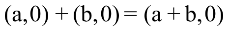
LaTeX candidateLaTeX source
\text{(a,0)}+\text{(b,0)}=\text{(a}+\text{b,0)}image3 · formula · Assignment 81, I
Source preview · reference page 1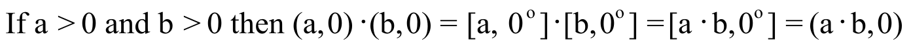
LaTeX candidateLaTeX source
\text{If a>0 and b>0 then (a,0)}\cdot \text{(b,0)}=\text{ [a,0}^{\text{o}}\text{]}\cdot \text{[b,0}^{\text{o}}\text{]}=\text{[a}\cdot \text{b,0}^{\text{o}}\text{]}=\text{(a}\cdot \text{b,0)}image4 · formula · Assignment 81, I
Source preview · reference page 1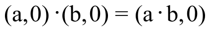
LaTeX candidateLaTeX source
\text{(a,0)}\cdot \text{(b,0)}=\text{(a}\cdot \text{b,0)}image5 · formula · Assignment 81, I
Source preview · reference page 1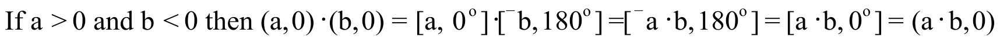
LaTeX candidateLaTeX source
\text{If a>0 and b<0 then (a,0)}\cdot \text{(b,0)}=\text{ [a,0}^{\text{o}}\text{]}\cdot \text{[}{}^{-}\text{b,180}^{\text{o}}\text{]}=\text{[}{}^{-}\text{a}\cdot \text{b,180}^{\text{o}}\text{]}=\text{[a}\cdot \text{b,0}^{\text{o}}\text{]}=\text{(a}\cdot \text{b,0)}image6 · formula · Assignment 81, I
Source preview · reference page 1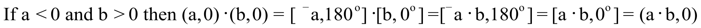
LaTeX candidateLaTeX source
\text{If a<0 and b>0 then (a,0)}\cdot \text{(b,0)}=\text{ [}{}^{-}\text{a,180}^{\text{o}}\text{]}\cdot \text{[b,0}^{\text{o}}\text{]}=\text{[}{}^{-}\text{a}\cdot \text{b,180}^{\text{o}}\text{]}=\text{[a}\cdot \text{b,0}^{\text{o}}\text{]}=\text{(a}\cdot \text{b,0)}image7 · formula · Assignment 81, I
Source preview · reference page 1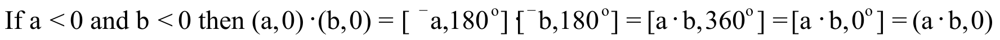
LaTeX candidateLaTeX source
\text{If a<0 and b<0 then (a,0)}\cdot \text{(b,0)}=\text{ [}{}^{-}\text{a,180}^{\text{o}}\text{]}\cdot \text{[}{}^{-}\text{b,180}^{\text{o}}\text{]}=\text{[a}\cdot \text{b,360}^{\text{o}}\text{]}=\text{[a}\cdot \text{b,0}^{\text{o}}\text{]}=\text{(a}\cdot \text{b,0)}image8 · formula · Assignment 81, I
Source preview · reference page 2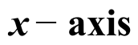
LaTeX candidateLaTeX source
x-\text{axis}image9 · formula · Assignment 81, II
Source preview · reference page 2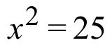
LaTeX candidateLaTeX source
x^{2}=25image10 · formula · Assignment 81, II
Source preview · reference page 2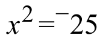
LaTeX candidateLaTeX source
x^{2}={}^{-}25image11 · formula · Assignment 81, V
Source preview · reference page 2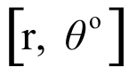
LaTeX candidateLaTeX source
\left[ \text{r}\mathrm{,}\text{ }\theta ^{\text{o}} \right]image12 · formula · Assignment 81, V
Source preview · reference page 2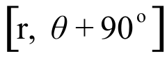
LaTeX candidateLaTeX source
\left[ \text{r}\mathrm{,}\text{ }\theta +90^{\text{o}} \right]image13 · calculation flow · Assignment 81, VII
Source preview · reference page 3 Drawing recovered as vectors
Drawing recovered as vectors SVG · Drawing JSON · Original file · Source PDF
SVG · Drawing JSON · Original file · Source PDFimage14 · formula · Assignment 81, VII
Source preview · reference page 3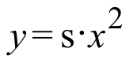
LaTeX candidateLaTeX source
y=\text{s}\cdot x^{2}image15 · calculation flow · Assignment 81, VIII
Source preview · reference page 3 Drawing recovered as vectors
Drawing recovered as vectors SVG · Drawing JSON · Original file · Source PDF
SVG · Drawing JSON · Original file · Source PDFimage16 · calculation flow · Assignment 81, IX
Source preview · reference page 4 Drawing recovered as vectors
Drawing recovered as vectors SVG · Drawing JSON · Original file · Source PDF
SVG · Drawing JSON · Original file · Source PDFimage17 · formula · Assignment 81, X
Source preview · reference page 4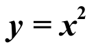
LaTeX candidateLaTeX source
y=x^{2}image18 · formula · Assignment 81, X
Source preview · reference page 4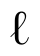
LaTeX candidateLaTeX source
\ell image19 · formula · Assignment 81, X
Source preview · reference page 4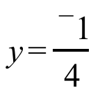
LaTeX candidateLaTeX source
y=\frac{{}^{-}1}{4}image20 · formula · Assignment 81, X
Source preview · reference page 4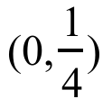
LaTeX candidateLaTeX source
\mathrm{(}0\mathrm{,}\frac{1}{4}\mathrm{)}image21 · formula · Assignment 81, X
Source preview · reference page 4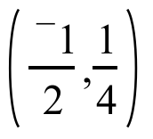
LaTeX candidateLaTeX source
\left( \frac{{}^{-}1}{2}\mathrm{,}\frac{1}{4} \right)image22 · formula · Assignment 81, X
Source preview · reference page 4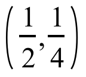
LaTeX candidateLaTeX source
\left( \frac{1}{2}\mathrm{,}\frac{1}{4} \right)image23 · formula · Assignment 81, X
Source preview · reference page 4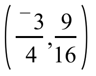
LaTeX candidateLaTeX source
\left( \frac{{}^{-}3}{4}\mathrm{,}\frac{9}{16} \right)image24 · formula · Assignment 81, X
Source preview · reference page 4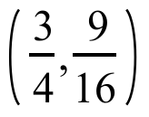
LaTeX candidateLaTeX source
\left( \frac{3}{4}\mathrm{,}\frac{9}{16} \right)image25 · formula · Assignment 81, X
Source preview · reference page 4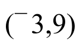
LaTeX candidateLaTeX source
\mathrm{(}{}^{-}3\mathrm{,}9\mathrm{)}image26 · formula · Assignment 81, X
Source preview · reference page 4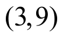
LaTeX candidateLaTeX source
\mathrm{(}3\mathrm{,}9\mathrm{)}image27 · formula · Assignment 81, X
Source preview · reference page 4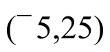
LaTeX candidateLaTeX source
\mathrm{(}{}^{-}5\mathrm{,}25\mathrm{)}image28 · formula · Assignment 81, X
Source preview · reference page 4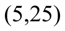
LaTeX candidateLaTeX source
\mathrm{(}5\mathrm{,}25\mathrm{)}image29 · formula · Assignment 81, X
Source preview · reference page 4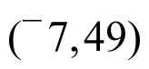
LaTeX candidateLaTeX source
\mathrm{(}{}^{-}7\mathrm{,}49\mathrm{)}image30 · formula · Assignment 81, X
Source preview · reference page 4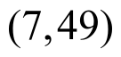
LaTeX candidateLaTeX source
\mathrm{(}7\mathrm{,}49\mathrm{)}image31 · formula · Assignment 81, X
Source preview · reference page 4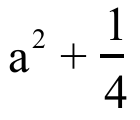
LaTeX candidateLaTeX source
\text{a}^{2}+\frac{1}{4}image32 · formula · Assignment 81, X
Source preview · reference page 5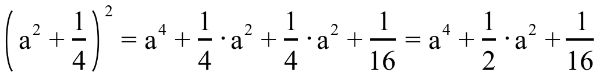
LaTeX candidateLaTeX source
\left( \text{a}^{\text{2}}+\frac{\text{1}}{\text{4}} \right)^{\text{2}}=\text{a}^{\text{4}}+\frac{\text{1}}{\text{4}}\cdot \text{a}^{\text{2}}+\frac{\text{1}}{\text{4}}\cdot \text{a}^{\text{2}}+\frac{\text{1}}{\text{16}}=\text{a}^{\text{4}}+\frac{\text{1}}{\text{2}}\cdot \text{a}^{\text{2}}+\frac{\text{1}}{\text{16}}image33 · formula · Assignment 81, X
Source preview · reference page 5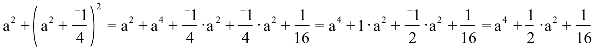
LaTeX candidateLaTeX source
\text{a}^{\text{2}}+\left( \text{a}^{\text{2}}+\frac{{}^{-}\text{1}}{\text{4}} \right)^{\text{2}}=\text{a}^{\text{2}}+\text{a}^{\text{4}}+\frac{{}^{-}\text{1}}{\text{4}}\cdot \text{a}^{\text{2}}+\frac{{}^{-}\text{1}}{\text{4}}\cdot \text{a}^{\text{2}}+\frac{\text{1}}{\text{16}}=\text{a}^{\text{4}}+\text{1}\cdot \text{a}^{\text{2}}+\frac{{}^{-}\text{1}}{\text{2}}\cdot \text{a}^{\text{2}}+\frac{\text{1}}{\text{16}}=\text{a}^{\text{4}}+\frac{\text{1}}{\text{2}}\cdot \text{a}^{\text{2}}+\frac{\text{1}}{\text{16}}image34 · formula · Assignment 81, X
Source preview · reference page 5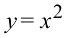
LaTeX candidateLaTeX source
y=x^{2}image35 · formula · Assignment 81, X
Source preview · reference page 6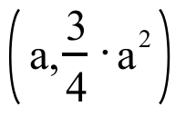
LaTeX candidateLaTeX source
\left( \text{a,}\frac{\text{3}}{\text{4}}\cdot \text{a}^{\text{2}} \right)image36 · formula · Assignment 81, X
Source preview · reference page 6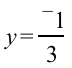
LaTeX candidateLaTeX source
y=\frac{{}^{-}1}{3}image37 · formula · Assignment 81, X
Source preview · reference page 6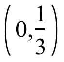
LaTeX candidateLaTeX source
\left( 0\mathrm{,}\frac{1}{3} \right)image38 · formula · Assignment 81, X
Source preview · reference page 6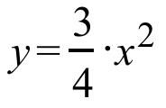
LaTeX candidateLaTeX source
y=\frac{3}{4}\cdot x^{2}image39 · formula · Assignment 82, I
Source preview · reference page 7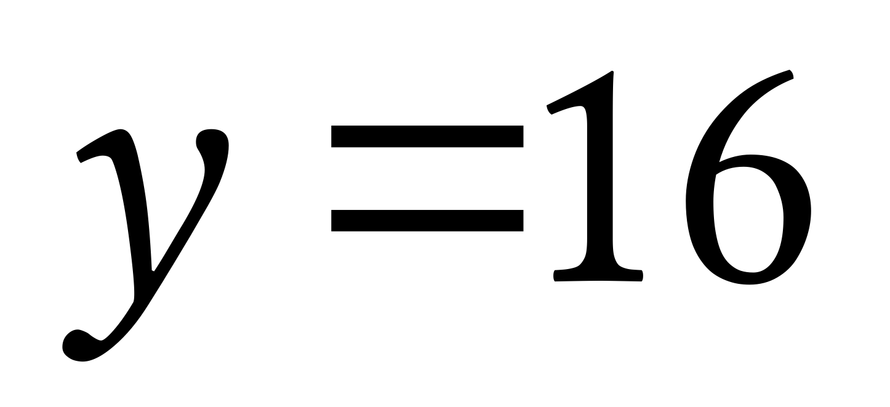
LaTeX candidateLaTeX source
y=16image40 · formula · Assignment 82, I
Source preview · reference page 7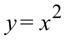
LaTeX candidateLaTeX source
y=x^{2}image41 · formula · Assignment 82, I
Source preview · reference page 7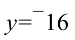
LaTeX candidateLaTeX source
y={}^{-}16image42 · formula · Assignment 82, II
Source preview · reference page 7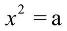
LaTeX candidateLaTeX source
x^{2}=\text{a}image43 · formula · Assignment 82, II
Source preview · reference page 7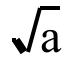
LaTeX candidateLaTeX source
\sqrt{\text{a}}image44 · formula · Assignment 82, II
Source preview · reference page 7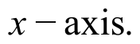
LaTeX candidateLaTeX source
x-\text{axis}\mathrm{.}image45 · formula · Assignment 82, II
Source preview · reference page 7 LaTeX candidate
LaTeX candidateLaTeX source
x^{2}={}^{-}9image46 · formula · Assignment 82, II
Source preview · reference page 7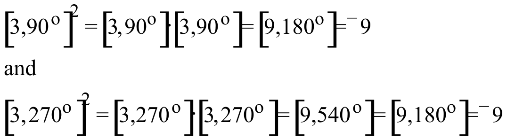
LaTeX candidateLaTeX source
\begin{array}{l}\left[ 3\mathrm{,}90^{\text{o}} \right]^{2}=\left[ 3\mathrm{,}90^{\text{o}} \right]\cdot \left[ 3\mathrm{,}90^{\text{o}} \right]=\left[ 9\mathrm{,}180^{\text{o}} \right]={}^{-}9 \\ \text{and} \\ \left[ \text{3,270}^{\text{o}} \right]^{2}=\left[ 3\mathrm{,}270^{\text{o}} \right]\cdot \left[ 3\mathrm{,}270^{\text{o}} \right]=\left[ 9\mathrm{,}540^{\text{o}} \right]=\left[ 9\mathrm{,}180^{\text{o}} \right]={}^{-}9\end{array}image47 · formula · Assignment 82, II
Source preview · reference page 8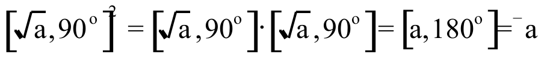
LaTeX candidateLaTeX source
\left[ \sqrt{\text{a}}\text{,90}^{\text{o}} \right]^{\text{2}}=\left[ \sqrt{\text{a}}\text{,90}^{\text{o}} \right]\cdot \left[ \sqrt{\text{a}}\text{,90}^{\text{o}} \right]=\left[ \text{a,180}^{\text{o}} \right]={}^{-}\text{a}image48 · formula · Assignment 82, II
Source preview · reference page 8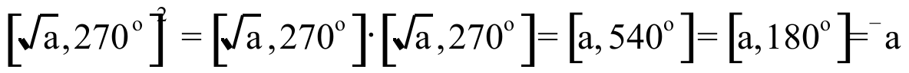
LaTeX candidateLaTeX source
\left[ \sqrt{\text{a}}\text{,270}^{\text{o}} \right]^{\text{2}}=\left[ \sqrt{\text{a}}\text{,270}^{\text{o}} \right]\cdot \left[ \sqrt{\text{a}}\text{,270}^{\text{o}} \right]=\left[ \text{a,540}^{\text{o}} \right]=\left[ \text{a,180}^{\text{o}} \right]={}^{-}\text{a}image49 · formula · Assignment 82, II
Source preview · reference page 8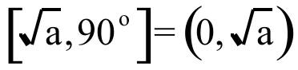
LaTeX candidateLaTeX source
\left[ \sqrt{\text{a}}\text{,90}^{\text{o}} \right]=\left( \text{0,}\sqrt{\text{a}} \right)image50 · formula · Assignment 82, II
Source preview · reference page 8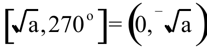
LaTeX candidateLaTeX source
\left[ \sqrt{\text{a}}\text{,270}^{\text{o}} \right]=\left( \text{0,}{}^{-}\sqrt{\text{a}} \right)image51 · formula · Assignment 82, II
Source preview · reference page 8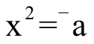
LaTeX candidateLaTeX source
\text{x}^{\text{2}}={}^{-}\text{a}image52 · formula · Assignment 82, II
Source preview · reference page 8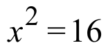
LaTeX candidateLaTeX source
x^{2}=16image53 · formula · Assignment 82, II
Source preview · reference page 8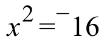
LaTeX candidateLaTeX source
x^{2}={}^{-}16image54 · formula · Assignment 82, II
Source preview · reference page 8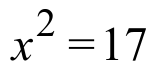
LaTeX candidateLaTeX source
x^{2}=17image55 · formula · Assignment 82, II
Source preview · reference page 8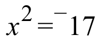
LaTeX candidateLaTeX source
x^{2}={}^{-}17image56 · formula · Assignment 82, III
Source preview · reference page 9LaTeX candidateLaTeX source
\text{r}\mathrm{,}\theta ^{\text{o}}\mathrm{]}image57 · formula · Assignment 82, III
Source preview · reference page 9LaTeX candidateLaTeX source
\left[ \text{r,}\theta ^{o} \right]\cdot \text{(}0\text{,}1\text{)}=\left[ \text{r,}\theta ^{o} \right]\cdot \left[ 1\text{,}90^{o} \right]=\left[ \text{r,}\theta ^{o}+90^{o} \right]image58 · formula · Assignment 82, III
Source preview · reference page 9LaTeX candidateLaTeX source
\left[ \text{r}\mathrm{,}\theta ^{\text{o}}+90^{\text{o}} \right]image59 · formula · Assignment 82, III
Source preview · reference page 9LaTeX candidateLaTeX source
\left[ \text{r}\mathrm{,}\theta ^{\text{o}} \right]image60 · formula · Assignment 82, IV
Source preview · reference page 9LaTeX candidateLaTeX source
\sqrt{5}\cdot image61 · formula · Assignment 82, IV
Source preview · reference page 9LaTeX candidateLaTeX source
{}^{-}\sqrt{5}\cdot image62 · formula · Assignment 82, V
Source preview · reference page 9LaTeX candidateLaTeX source
\mathrm{(}x+3\mathrm{)}\cdot \mathrm{(}x+3\mathrm{)}image63 · formula · Assignment 82, V
Source preview · reference page 9LaTeX candidateLaTeX source
\mathrm{(}x+{}^{-}5\mathrm{)}\cdot \mathrm{(}x+{}^{-}5\mathrm{)}image64 · formula · Assignment 82, V
Source preview · reference page 9LaTeX candidateLaTeX source
\mathrm{(}x+2\mathrm{)}^{2}image65 · calculation flow · Assignment 82, VII
Source preview · reference page 10 Drawing recovered as vectors
Drawing recovered as vectors SVG · Drawing JSON · Original file · Source PDF
SVG · Drawing JSON · Original file · Source PDFimage66 · calculation flow · Assignment 82, VIII
Source preview · reference page 10 Drawing recovered as vectors
Drawing recovered as vectors SVG · Drawing JSON · Original file · Source PDF
SVG · Drawing JSON · Original file · Source PDFimage67 · calculation flow · Assignment 82, IX
Source preview · reference page 11 Drawing recovered as vectors
Drawing recovered as vectors SVG · Drawing JSON · Original file · Source PDF
SVG · Drawing JSON · Original file · Source PDFimage68 · calculation flow · Assignment 82, X
Source preview · reference page 11 Drawing recovered as vectors
Drawing recovered as vectors SVG · Drawing JSON · Original file · Source PDF
SVG · Drawing JSON · Original file · Source PDFimage69 · formula · Assignment 82, XI
Source preview · reference page 11LaTeX candidateLaTeX source
\text{(a,2}\cdot \text{a}^{\text{2}}\text{)}image70 · formula · Assignment 82, XI
Source preview · reference page 11LaTeX candidateLaTeX source
y=\frac{{}^{-}1}{8}image71 · formula · Assignment 82, XI
Source preview · reference page 11LaTeX candidateLaTeX source
\left( 0\mathrm{,}\frac{1}{8} \right)image72 · formula · Assignment 82, XI
Source preview · reference page 12LaTeX candidateLaTeX source
y=2\cdot x^{2}image73 · formula · Assignment 83, I
Source preview · reference page 13LaTeX candidateLaTeX source
\left[ \sqrt{6}\mathrm{,}90^{\text{o}} \right]image74 · formula · Assignment 83, I
Source preview · reference page 13LaTeX candidateLaTeX source
\left[ \sqrt{6}\mathrm{,}270^{\text{o}} \right]image75 · formula · Assignment 83, III
Source preview · reference page 13 LaTeX candidate
LaTeX candidateLaTeX source
y-\text{axis}image76 · rotation · Assignment 83, III
Source preview · reference page 13 Drawing recovered as vectors
Drawing recovered as vectors SVG · Drawing JSON · Original file · Source PDF
SVG · Drawing JSON · Original file · Source PDFimage77 · formula · Assignment 83, III
Source preview · reference page 14LaTeX candidateLaTeX source
\sqrt{6}image78 · formula · Assignment 83, III
Source preview · reference page 14LaTeX candidateLaTeX source
\mathrm{(}0\mathrm{,}{}^{-}\sqrt{6}\mathrm{)}image79 · formula · Assignment 83, IV
Source preview · reference page 14LaTeX candidateLaTeX source
x^{2}={}^{-}\text{a}image80 · formula · Assignment 83, IV
Source preview · reference page 14LaTeX candidateLaTeX source
x^{2}=\mathrm{[}\text{a}\mathrm{,}180^{\text{o}}\mathrm{]}image81 · formula · Assignment 83, IV
Source preview · reference page 14LaTeX candidateLaTeX source
\mathrm{[}\sqrt{\text{a}}\mathrm{,}90^{\text{o}}\mathrm{]}image82 · formula · Assignment 83, IV
Source preview · reference page 14LaTeX candidateLaTeX source
\mathrm{[}\sqrt{\text{a}}\mathrm{,}270^{\text{o}}\mathrm{]}image83 · formula · Assignment 83, IV
Source preview · reference page 14LaTeX candidateLaTeX source
\left( 0\mathrm{,}\sqrt{\text{a}} \right)image84 · formula · Assignment 83, IV
Source preview · reference page 14LaTeX candidateLaTeX source
\left( 0\mathrm{,}{}^{-}\sqrt{\text{a}} \right)image85 · formula · Assignment 83, IV
Source preview · reference page 14LaTeX candidateLaTeX source
{}^{-}\text{a}image86 · formula · Assignment 83, IV
Source preview · reference page 14LaTeX candidateLaTeX source
\sqrt{\text{a}}\cdot image87 · formula · Assignment 83, IV
Source preview · reference page 14LaTeX candidateLaTeX source
{}^{-}\sqrt{\text{a}}\cdot image88 · formula · Assignment 83, IV
Source preview · reference page 14LaTeX candidateLaTeX source
x^{2}={}^{-}11image89 · formula · Assignment 83, IV
Source preview · reference page 14LaTeX candidateLaTeX source
\left[ \sqrt{11}\mathrm{,}90^{\text{o}} \right]=\left( 0\mathrm{,}\sqrt{11} \right)=\sqrt{11}\cdot image90 · formula · Assignment 83, IV
Source preview · reference page 14LaTeX candidateLaTeX source
\left[ \sqrt{11}\mathrm{,}270^{\text{o}} \right]=\left( 0\mathrm{,}{}^{-}\sqrt{11} \right)={}^{-}\sqrt{11}\cdot image91 · formula · Assignment 83, IV
Source preview · reference page 14LaTeX candidateLaTeX source
x^{2}=6image92 · formula · Assignment 83, IV
Source preview · reference page 14LaTeX candidateLaTeX source
x^{2}={}^{-}6image93 · formula · Assignment 83, V
Source preview · reference page 15LaTeX candidateLaTeX source
\mathrm{(}\sqrt{6}\mathrm{,}0\mathrm{)}\cdot image94 · formula · Assignment 83, V
Source preview · reference page 15LaTeX candidateLaTeX source
\mathrm{(}{}^{-}\sqrt{6}\mathrm{,}0\mathrm{)}\cdot \mathrm{(}0\mathrm{,}1\mathrm{)}image95 · formula · Assignment 83, V
Source preview · reference page 15LaTeX candidateLaTeX source
\mathrm{(}{}^{-}\sqrt{6}\mathrm{,}0\mathrm{)}\cdot image96 · formula · Assignment 83, VI
Source preview · reference page 15LaTeX candidateLaTeX source
\mathrm{(}x+4\mathrm{)}\cdot \mathrm{(}x+4\mathrm{)}image97 · formula · Assignment 83, VI
Source preview · reference page 15LaTeX candidateLaTeX source
\mathrm{(}x+{}^{-}9\mathrm{)}^{2}image98 · formula · Assignment 83, VI
Source preview · reference page 15LaTeX candidateLaTeX source
\mathrm{(}x+\frac{1}{2}\mathrm{)}^{2}image99 · formula · Assignment 83, IX
Source preview · reference page 16LaTeX candidateLaTeX source
y=x^{2}image100 · formula · Assignment 83, IX
Source preview · reference page 16LaTeX candidateLaTeX source
\mathrm{(}x\mathrm{,}y\mathrm{)}=\mathrm{(}1\cdot x\mathrm{,}2\cdot y\mathrm{)}image101 · formula · Assignment 83, IX
Source preview · reference page 16LaTeX candidateLaTeX source
\left( \frac{1}{2}\cdot y \right)=x^{2}image102 · formula · Assignment 83, IX
Source preview · reference page 16LaTeX candidateLaTeX source
\mathrm{(}x\mathrm{,}y\mathrm{)}=\mathrm{(}\frac{1}{2}\cdot x\mathrm{,}\frac{1}{2}\cdot y\mathrm{)}image103 · formula · Assignment 83, IX
Source preview · reference page 16LaTeX candidateLaTeX source
\left( 2\cdot y \right)=\left( 2\cdot x \right)^{2}image104 · formula · Assignment 83, IX
Source preview · reference page 16LaTeX candidateLaTeX source
2\cdot y=4\cdot x^{2}image105 · formula · Assignment 83, IX
Source preview · reference page 16LaTeX candidateLaTeX source
\mathrm{(}x\mathrm{,}y\mathrm{)}=\mathrm{(}\frac{1}{3}\cdot x\mathrm{,}\frac{2}{9}\cdot y\mathrm{)}image106 · formula · Assignment 83, IX
Source preview · reference page 16LaTeX candidateLaTeX source
\left( \frac{9}{2}\cdot y \right)=\left( 3\cdot x \right)^{2}image107 · formula · Assignment 83, IX
Source preview · reference page 16LaTeX candidateLaTeX source
\frac{9}{2}\cdot y=9\cdot x^{2}image108 · formula · Assignment 83, IX
Source preview · reference page 16LaTeX candidateLaTeX source
y=x^{2}image109 · formula · Assignment 83, IX
Source preview · reference page 17LaTeX candidateLaTeX source
y=\text{k}\cdot x^{2}image110 · calculation flow · Assignment 83, X
Source preview · reference page 17 Drawing recovered as vectors
Drawing recovered as vectors SVG · Drawing JSON · Original file · Source PDF
SVG · Drawing JSON · Original file · Source PDFimage111 · calculation flow · Assignment 83, X
Source preview · reference page 17 Drawing recovered as vectors
Drawing recovered as vectors SVG · Drawing JSON · Original file · Source PDF
SVG · Drawing JSON · Original file · Source PDFimage112 · formula · Assignment 84, I
Source preview · reference page 18LaTeX candidateLaTeX source
\mathrm{(}\sqrt{11}\mathrm{,}0\mathrm{)}\cdot image113 · formula · Assignment 84, I
Source preview · reference page 18LaTeX candidateLaTeX source
\mathrm{(}{}^{-}\sqrt{11}\mathrm{,}0\mathrm{)}\cdot image114 · formula · Assignment 84, I
Source preview · reference page 18LaTeX candidateLaTeX source
0\mathrm{,}\sqrt{5}\mathrm{)}image115 · formula · Assignment 84, I
Source preview · reference page 18LaTeX candidateLaTeX source
{}^{-}\sqrt{5}image116 · formula · Assignment 84, III
Source preview · reference page 18LaTeX candidateLaTeX source
\mathrm{(}x+{}^{-}3\mathrm{)}^{2}image117 · formula · Assignment 84, III
Source preview · reference page 18LaTeX candidateLaTeX source
\mathrm{(}x+\frac{1}{3}\mathrm{)}^{2}image118 · formula · Assignment 84, IV
Source preview · reference page 18LaTeX candidateLaTeX source
\mathrm{(}x+{}^{-}2\mathrm{)}^{2}=6image119 · formula · Assignment 84, V
Source preview · reference page 18LaTeX candidateLaTeX source
\mathrm{(}x+{}^{-}2\mathrm{)}^{2}={}^{-}6image120 · formula · Assignment 84, VI
Source preview · reference page 18LaTeX candidateLaTeX source
\mathrm{(}x+\mathrm{\_\_\_\_)}^{2}=x^{2}+{}^{-}4\cdot x+{}^{-}4\cdot x+\mathrm{\_\_\_\_}=x^{2}+\mathrm{\_\_\_\_}+\mathrm{\_\_\_\_}image121 · formula · Assignment 84, VI
Source preview · reference page 18LaTeX candidateLaTeX source
\mathrm{(}x+\mathrm{\_\_\_\_)}^{2}=x^{2}+3\cdot x+3\cdot x+\mathrm{\_\_\_\_}=x^{2}+\mathrm{\_\_\_\_}+\mathrm{\_\_\_\_}image122 · formula · Assignment 84, VI
Source preview · reference page 18LaTeX candidateLaTeX source
\mathrm{(}x+\mathrm{\_\_\_\_)}^{2}=x^{2}+4\cdot x+\mathrm{\_\_\_\_}image123 · coordinate plot · Assignment 84, X
Source preview · reference page 20 Original retainedOriginal retainedContains original raster artwork; retained as an image. Vector conversion is incomplete.
Original retainedOriginal retainedContains original raster artwork; retained as an image. Vector conversion is incomplete.Contains original raster artwork; retained as an image. Vector conversion is incomplete.
Original file · Source PDFimage124 · formula · Assignment 84, X
Source preview · reference page 20LaTeX candidateLaTeX source
x\mathrm{,}y\mathrm{)}=\mathrm{(}x\mathrm{,}{}^{-}2y\mathrm{)}image125 · formula · Assignment 84, X
Source preview · reference page 20LaTeX candidateLaTeX source
\left( \frac{{}^{-}1}{2}\cdot y \right)=x^{2}image126 · formula · Assignment 84, X
Source preview · reference page 20LaTeX candidateLaTeX source
y={}^{-}2\cdot x^{2}image127 · coordinate plot · Assignment 84, X
Source preview · reference page 20 Original retainedOriginal retainedSome formula labels render with legacy Symbol-font substitutions; original artwork is retained.
Original retainedOriginal retainedSome formula labels render with legacy Symbol-font substitutions; original artwork is retained.Contains original raster artwork; retained as an image. Vector conversion is incomplete.
Some formula labels render with legacy Symbol-font substitutions; original artwork is retained.
Original file · Source PDFimage128 · formula · Assignment 85, I
Source preview · reference page 21LaTeX candidateLaTeX source
x^{2}=6image129 · formula · Assignment 85, I
Source preview · reference page 21LaTeX candidateLaTeX source
\mathrm{(}x+{}^{-}2\mathrm{)}^{2}=6image130 · formula · Assignment 85, I
Source preview · reference page 21LaTeX candidateLaTeX source
{}^{-}\sqrt{6}image131 · formula · Assignment 85, I
Source preview · reference page 21LaTeX candidateLaTeX source
x^{2}+{}^{-}4\cdot x+4=6image132 · formula · Assignment 85, I
Source preview · reference page 21LaTeX candidateLaTeX source
x\mathrm{)}=x+2image133 · formula · Assignment 85, I
Source preview · reference page 21LaTeX candidateLaTeX source
{}^{-}\sqrt{6}\mathrm{)}={}^{-}\sqrt{6}+2image134 · formula · Assignment 85, I
Source preview · reference page 21LaTeX candidateLaTeX source
\mathrm{((}{}^{-}\sqrt{6}+2\mathrm{)}+{}^{-}2\mathrm{)}^{2}=\mathrm{(}{}^{-}\sqrt{6}+\mathrm{(}2+{}^{-}2\mathrm{))}^{2}=\mathrm{(}{}^{-}\sqrt{6}\mathrm{)}^{2}=6image135 · formula · Assignment 85, I
Source preview · reference page 21LaTeX candidateLaTeX source
\sqrt{6}\mathrm{)}=\sqrt{6}+2image136 · formula · Assignment 85, I
Source preview · reference page 21LaTeX candidateLaTeX source
\mathrm{((}\sqrt{6}+2\mathrm{)}+{}^{-}2\mathrm{)}^{2}=\mathrm{(}\sqrt{6}+\mathrm{(}2+{}^{-}2\mathrm{))}^{2}=\mathrm{(}\sqrt{6}\mathrm{)}^{2}=6image137 · formula · Assignment 85, I
Source preview · reference page 21LaTeX candidateLaTeX source
x^{2}=7image138 · formula · Assignment 85, I
Source preview · reference page 21LaTeX candidateLaTeX source
\mathrm{(}x+3\mathrm{)}^{2}=7image139 · formula · Assignment 85, I
Source preview · reference page 21LaTeX candidateLaTeX source
\mathrm{(}x+{}^{-}7\mathrm{)}^{2}=7image140 · formula · Assignment 85, I
Source preview · reference page 21LaTeX candidateLaTeX source
x^{2}={}^{-}11image141 · formula · Assignment 85, I
Source preview · reference page 21LaTeX candidateLaTeX source
\mathrm{(}x+{}^{-}5\mathrm{)}^{2}={}^{-}11image142 · formula · Assignment 85, I
Source preview · reference page 21LaTeX candidateLaTeX source
\mathrm{(}x+\frac{1}{2}\mathrm{)}^{2}={}^{-}11image143 · formula · Assignment 85, II
Source preview · reference page 21LaTeX candidateLaTeX source
\mathrm{(}x+\mathrm{\_\_\_)}^{2}=x^{2}+6\cdot x+\mathrm{\_\_\_\_}image144 · formula · Assignment 85, II
Source preview · reference page 22LaTeX candidateLaTeX source
\mathrm{(}x+\mathrm{\_\_\_)}^{2}=x^{2}+{}^{-}10\cdot x+\mathrm{\_\_\_\_}image145 · formula · Assignment 85, II
Source preview · reference page 22LaTeX candidateLaTeX source
\mathrm{(}x+\mathrm{\_\_\_)}^{2}=x^{2}+3\cdot x+\mathrm{\_\_\_\_}image146 · formula · Assignment 85, III
Source preview · reference page 22LaTeX candidateLaTeX source
x^{2}+6\cdot x=8image147 · formula · Assignment 85, III
Source preview · reference page 22LaTeX candidateLaTeX source
\begin{array}{l}x^2+6x+\underset{\mathrm{B}}{\underline{\qquad}}=8+\underset{\mathrm{C}}{\underline{\qquad}} \\ (x+\underset{\mathrm{A}}{\underline{\qquad}})^2=\underset{\mathrm{D}}{\underline{\qquad}}\end{array}image148 · formula · Assignment 85, III
Source preview · reference page 22LaTeX candidateLaTeX source
x^{2}+{}^{-}10\cdot x={}^{-}11image149 · formula · Assignment 85, III
Source preview · reference page 22LaTeX candidateLaTeX source
\begin{array}{l}x^2+{}^{-}10x+\underset{\mathrm{B}}{\underline{\qquad}}={}^{-}11+\underset{\mathrm{C}}{\underline{\qquad}} \\ (x+\underset{\mathrm{A}}{\underline{\qquad}})^2=\underset{\mathrm{D}}{\underline{\qquad}}\end{array}image150 · calculation flow · Assignment 85, VII
Source preview · reference page 23 Drawing recovered as vectors
Drawing recovered as vectors SVG · Drawing JSON · Original file · Source PDF
SVG · Drawing JSON · Original file · Source PDFimage151 · calculation flow · Assignment 85, VII
Source preview · reference page 23 Drawing recovered as vectors
Drawing recovered as vectors SVG · Drawing JSON · Original file · Source PDF
SVG · Drawing JSON · Original file · Source PDFimage152 · screenshot · Assignment 85, VIII
Source preview · reference page 23 Original retainedOriginal retainedContains original raster artwork; retained as an image. Vector conversion is incomplete.
Original retainedOriginal retainedContains original raster artwork; retained as an image. Vector conversion is incomplete.Contains original raster artwork; retained as an image. Vector conversion is incomplete.
Original file · Source PDFimage153 · formula · Assignment 85, VIII
Source preview · reference page 23LaTeX candidateLaTeX source
\mathrm{(}x\mathrm{,}y\mathrm{)}=\mathrm{(}x+{}^{-}2\mathrm{,}y+1\mathrm{)}image154 · formula · Assignment 86, I
Source preview · reference page 25LaTeX candidateLaTeX source
x^{2}=25image155 · formula · Assignment 86, I
Source preview · reference page 25LaTeX candidateLaTeX source
\mathrm{(}x+6\mathrm{)}^{2}=25image156 · formula · Assignment 86, I
Source preview · reference page 25LaTeX candidateLaTeX source
x^{2}=\frac{{}^{-}3}{4}image157 · formula · Assignment 86, I
Source preview · reference page 25LaTeX candidateLaTeX source
\mathrm{(}x+\frac{7}{2}\mathrm{)}^{2}=\frac{{}^{-}3}{4}image158 · formula · Assignment 86, I
Source preview · reference page 25LaTeX candidateLaTeX source
x^{2}=\frac{3}{2}image159 · formula · Assignment 86, I
Source preview · reference page 25LaTeX candidateLaTeX source
\mathrm{(}x+\frac{\sqrt{5}}{2}\mathrm{)}^{2}=\frac{3}{2}image160 · formula · Assignment 86, II
Source preview · reference page 25LaTeX candidateLaTeX source
\begin{array}{l}x^2+12x+\underset{\mathrm{B}}{\underline{\qquad}}={}^{-}11+\underset{\mathrm{C}}{\underline{\qquad}} \\ (x+\underset{\mathrm{A}}{\underline{\qquad}})^2=\underset{\mathrm{D}}{\underline{\qquad}}\end{array}image161 · formula · Assignment 86, II
Source preview · reference page 25LaTeX candidateLaTeX source
\begin{array}{l}x^2+7x+\underset{\mathrm{B}}{\underline{\qquad}}={}^{-}13+\underset{\mathrm{C}}{\underline{\qquad}} \\ (x+\underset{\mathrm{A}}{\underline{\qquad}})^2=\underset{\mathrm{D}}{\underline{\qquad}}\end{array}image162 · formula · Assignment 86, II
Source preview · reference page 25LaTeX candidateLaTeX source
\begin{array}{l}x^2+\sqrt5x+\underset{\mathrm{B}}{\underline{\qquad}}={}^{-}1+\underset{\mathrm{C}}{\underline{\qquad}} \\ (x+\underset{\mathrm{A}}{\underline{\qquad}})^2=\underset{\mathrm{D}}{\underline{\qquad}}\end{array}image163 · formula · Assignment 86, III
Source preview · reference page 25LaTeX candidateLaTeX source
\frac{{}^{-}\text{b}}{\text{2a}}+\frac{\sqrt{\text{b}^{\text{2}}+{}^{-}\text{4ac}}}{\text{2a}}image164 · formula · Assignment 86, III
Source preview · reference page 25LaTeX candidateLaTeX source
\frac{2}{5}+\frac{3}{10}=\frac{2}{2}\cdot \frac{2}{5}+\frac{3}{10}=\frac{4}{10}+\frac{3}{10}=\frac{4+3}{10}image165 · formula · Assignment 86, III
Source preview · reference page 25LaTeX candidateLaTeX source
\frac{4}{7}+\frac{3}{7\cdot \sqrt{5}}image166 · formula · Assignment 86, III
Source preview · reference page 25LaTeX candidateLaTeX source
\frac{{}^{-}\text{c}}{\text{a}}+\frac{\text{b}^{\text{2}}}{\text{a}^{\text{2}}}image167 · formula · Assignment 86, IV
Source preview · reference page 25LaTeX candidateLaTeX source
\Delta \text{Tbl=1}image168 · formula · Assignment 86, IV
Source preview · reference page 25LaTeX candidateLaTeX source
\sqrt{4\cdot \text{X}^{2}}image169 · formula · Assignment 86, VII
Source preview · reference page 26 LaTeX candidate
LaTeX candidateLaTeX source
y=x^{2}image170 · screenshot · Assignment 86, VII
Source preview · reference page 26 Original retainedOriginal retainedContains original raster artwork; retained as an image. Vector conversion is incomplete.
Original retainedOriginal retainedContains original raster artwork; retained as an image. Vector conversion is incomplete.Contains original raster artwork; retained as an image. Vector conversion is incomplete.
Original file · Source PDFimage171 · formula · Assignment 86, VII
Source preview · reference page 26LaTeX candidateLaTeX source
x\mathrm{,}y\mathrm{)}=\mathrm{(}x+{}^{-}2\mathrm{,}y+1\mathrm{)}image172 · screenshot · Assignment 86, VII
Source preview · reference page 27 Original retainedOriginal retainedContains original raster artwork; retained as an image. Vector conversion is incomplete.
Original retainedOriginal retainedContains original raster artwork; retained as an image. Vector conversion is incomplete.Contains original raster artwork; retained as an image. Vector conversion is incomplete.
Original file · Source PDFimage173 · formula · Assignment 86, VII
Source preview · reference page 27LaTeX candidateLaTeX source
x\mathrm{,}y\mathrm{)}=\mathrm{(}1\mathrm{.}5\cdot x\mathrm{,}3\mathrm{.}2\cdot y\mathrm{)}image174 · calculation flow · Assignment 86, VII
Source preview · reference page 27 Drawing recovered as vectors
Drawing recovered as vectors SVG · Drawing JSON · Original file · Source PDF
SVG · Drawing JSON · Original file · Source PDFimage175 · formula · Assignment 86, VII
Source preview · reference page 27LaTeX candidateLaTeX source
y=3\mathrm{.}2\cdot \text{ }\left( \frac{1}{1\mathrm{.}5}\cdot x \right)^{2}image176 · formula · Assignment 86, VII
Source preview · reference page 27LaTeX candidateLaTeX source
\mathrm{(}x\mathrm{,}y\mathrm{)}=\mathrm{(}x+{}^{-}2\mathrm{,}y+1\mathrm{)}image177 · calculation flow · Assignment 86, VII
Source preview · reference page 27 Drawing recovered as vectors
Drawing recovered as vectors
One embedded formula is extremely small in the legacy drawing preview. Its native equation is exposed separately for review.
SVG · Drawing JSON · Structured data · Original file · Source PDFimage178 · screenshot · Assignment 86, VII
Source preview · reference page 28 Original retainedOriginal retainedContains original raster artwork; retained as an image. Vector conversion is incomplete.
Original retainedOriginal retainedContains original raster artwork; retained as an image. Vector conversion is incomplete.Contains original raster artwork; retained as an image. Vector conversion is incomplete.
Original file · Source PDFimage179 · formula · Assignment 86, VII
Source preview · reference page 28LaTeX candidateLaTeX source
\mathrm{(}x\mathrm{,}y\mathrm{)}=\mathrm{(}x+2\mathrm{,}y+{}^{-}1\mathrm{)}image180 · screenshot · Assignment 86, VIII
Source preview · reference page 29 Original retainedOriginal retainedContains original raster artwork; retained as an image. Vector conversion is incomplete.
Original retainedOriginal retainedContains original raster artwork; retained as an image. Vector conversion is incomplete.Contains original raster artwork; retained as an image. Vector conversion is incomplete.
Original file · Source PDFimage181 · formula · Assignment 86, VIII
Source preview · reference page 29LaTeX candidateLaTeX source
\mathrm{(}x\mathrm{,}y\mathrm{)}=\mathrm{(}x+1\mathrm{,}y+2\mathrm{)}image182 · formula · Assignment 87, I
Source preview · reference page 30LaTeX candidateLaTeX source
\frac{1}{3}+\frac{2}{3\cdot \sqrt{7}}image183 · formula · Assignment 87, I
Source preview · reference page 30LaTeX candidateLaTeX source
\frac{{}^{-}\text{c}}{\text{a}}+\frac{\text{b}^{\text{2}}}{\text{a}^{\text{2}}}image184 · formula · Assignment 87, I
Source preview · reference page 30LaTeX candidateLaTeX source
\frac{{}^{-}\text{c}}{\text{a}}+\frac{\text{b}^{\text{2}}}{\text{4a}^{\text{2}}}image185 · formula · Assignment 87, II
Source preview · reference page 30LaTeX candidateLaTeX source
\sqrt{4\cdot \text{X}^{2}}image186 · formula · Assignment 87, II
Source preview · reference page 30LaTeX candidateLaTeX source
2\cdot \text{X}image187 · formula · Assignment 87, II
Source preview · reference page 30LaTeX candidateLaTeX source
\sqrt{\left( 4\cdot \text{X}^{2} \right)}image188 · formula · Assignment 87, II
Source preview · reference page 30LaTeX candidateLaTeX source
\sqrt{\left( 4\text{X}^{2} \right)}image189 · screenshot · Assignment 87, II
Source preview · reference page 30 Original retainedOriginal retainedContains original raster artwork; retained as an image. Vector conversion is incomplete.
Original retainedOriginal retainedContains original raster artwork; retained as an image. Vector conversion is incomplete.Contains original raster artwork; retained as an image. Vector conversion is incomplete.
Original file · Source PDFimage190 · formula · Assignment 87, II
Source preview · reference page 30LaTeX candidateLaTeX source
\sqrt{4\cdot \left( {}^{-}3 \right)^{2}}=\sqrt{4\cdot 9}=\sqrt{36}image191 · formula · Assignment 87, II
Source preview · reference page 31LaTeX candidateLaTeX source
\sqrt{\mathrm{(}4\cdot \text{X}^{2}\mathrm{)}}image192 · formula · Assignment 87, III
Source preview · reference page 31LaTeX candidateLaTeX source
\sqrt{\text{4}\cdot \text{a}^{\text{2}}}image193 · formula · Assignment 87, IV
Source preview · reference page 31LaTeX candidateLaTeX source
\frac{\sqrt{\text{b}^{\text{2}}+{}^{-}\text{4ac}}}{{}^{-}\text{2a}}image194 · formula · Assignment 87, IV
Source preview · reference page 31LaTeX candidateLaTeX source
\frac{{}^{-}\text{1}}{{}^{-}\text{1}}\cdot \frac{\sqrt{\text{b}^{\text{2}}+{}^{-}\text{4ac}}}{{}^{-}\text{2a}}image195 · formula · Assignment 87, IV
Source preview · reference page 31LaTeX candidateLaTeX source
\frac{{}^{-}\sqrt{\text{b}^{\text{2}}+{}^{-}\text{4ac}}}{\text{2a}}image196 · formula · Assignment 87, V
Source preview · reference page 31LaTeX candidateLaTeX source
x^{2}=5image197 · formula · Assignment 87, V
Source preview · reference page 31LaTeX candidateLaTeX source
\mathrm{(}x+\frac{\sqrt{11}}{2}\mathrm{)}^{2}=5image198 · formula · Assignment 87, V
Source preview · reference page 31LaTeX candidateLaTeX source
x^{\text{2}}=\frac{\text{b}^{\text{2}}+{}^{-}\text{4ac}}{\text{4a}^{\text{2}}}image199 · formula · Assignment 87, V
Source preview · reference page 31LaTeX candidateLaTeX source
\text{(}x+\frac{\text{b}}{\text{2a}}\text{)}^{\text{2}}=\frac{\text{b}^{\text{2}}+{}^{-}\text{4ac}}{\text{4a}^{\text{2}}}image200 · formula · Assignment 87, VI
Source preview · reference page 32LaTeX candidateLaTeX source
\text{a}\cdot x^{2}+\text{b}\cdot x+\text{c}=0image201 · formula · Assignment 87, VI
Source preview · reference page 32LaTeX candidateLaTeX source
\frac{\text{1}}{\text{a}}image202 · formula · Assignment 87, VI
Source preview · reference page 32LaTeX candidateLaTeX source
\frac{{}^{-}\text{c}}{\text{a}}image203 · formula · Assignment 87, VII
Source preview · reference page 32LaTeX candidateLaTeX source
\begin{array}{l}x^2+\sqrt{11}x+\underset{\mathrm{B}}{\underline{\qquad}}=\frac54+\underset{\mathrm{C}}{\underline{\qquad}} \\ (x+\underset{\mathrm{A}}{\underline{\qquad}})^2=\underset{\mathrm{D}}{\underline{\qquad}}\end{array}image204 · formula · Assignment 87, VII
Source preview · reference page 32LaTeX candidateLaTeX source
\begin{array}{l}x^2+\frac ba\cdot x+\underset{\mathrm{B}}{\underline{\qquad}}=\frac{{}^{-}c}{a}+\underset{\mathrm{C}}{\underline{\qquad}} \\ (x+\underset{\mathrm{A}}{\underline{\qquad}})^2=\underset{\mathrm{D}}{\underline{\qquad}}\end{array}image205 · formula · Assignment 87, IX
Source preview · reference page 32LaTeX candidateLaTeX source
\left[ \begin{matrix}4 & {}^{-}2 \\ 5 & 3\end{matrix} \right]\cdot \left[ \begin{matrix}x_{1} & x_{2} \\ y_{1} & y_{2}\end{matrix} \right]=\left[ \begin{matrix}1 & 0 \\ 0 & 1\end{matrix} \right]image206 · formula · Assignment 87, IX
Source preview · reference page 32LaTeX candidateLaTeX source
\left\{ \begin{array}{l}4\cdot x_{1}+{}^{-}2\cdot y_{1}=1 \\ 5\cdot x_{1}+3\cdot y_{1}=0\end{array} \right.image207 · formula · Assignment 87, IX
Source preview · reference page 32LaTeX candidateLaTeX source
\left[ \begin{matrix}4 & {}^{-}2 \\ 5 & 3\end{matrix} \right]image208 · coordinate plot · Assignment 87, X
Source preview · reference page 33 Original retainedOriginal retainedContains original raster artwork; retained as an image. Vector conversion is incomplete.
Original retainedOriginal retainedContains original raster artwork; retained as an image. Vector conversion is incomplete.Contains original raster artwork; retained as an image. Vector conversion is incomplete.
Original file · Source PDFimage209 · formula · Assignment 87, X
Source preview · reference page 34LaTeX candidateLaTeX source
y=\text{a}\cdot \mathrm{(}x+\text{h}\mathrm{)}^{2}+\text{k}image210 · formula · Assignment 88, I
Source preview · reference page 35LaTeX candidateLaTeX source
4\cdot x^{2}-5\cdot x-10=0image211 · formula · Assignment 88, I
Source preview · reference page 35LaTeX candidateLaTeX source
{}^{-}4\mathrm{.}9\cdot x^{2}+40\cdot x=10image212 · formula · Assignment 88, II
Source preview · reference page 35LaTeX candidateLaTeX source
\text{a}\cdot x^{2}+\text{b}\cdot x+\text{c}=0image213 · formula · Assignment 88, II
Source preview · reference page 35LaTeX candidateLaTeX source
x^{2}+\frac{\text{b}}{\text{a}}\cdot x+\frac{\text{c}}{\text{a}}=0image214 · formula · Assignment 88, II
Source preview · reference page 35LaTeX candidateLaTeX source
\begin{array}{l}x^2+\frac ba\cdot x+\underset{B}{\frac{b^2}{4\cdot a^2}}=\frac{{}^{-}c}{a}+\underset{C}{\frac{b^2}{4\cdot a^2}} \\ \left(x+\underset{A}{\frac12\cdot\frac ba}\right)^2=\underset{D}{\frac{{}^{-}4\cdot a\cdot c+b^2}{4\cdot a^2}}\end{array}image215 · formula · Assignment 88, II
Source preview · reference page 36LaTeX candidateLaTeX source
\frac{\sqrt{\text{b}^{\text{2}}+{}^{-}\text{4}\cdot \text{a}\cdot \text{c}}}{\sqrt{\text{4}\cdot \text{a}^{\text{2}}}}image216 · formula · Assignment 88, II
Source preview · reference page 36LaTeX candidateLaTeX source
\frac{{}^{-}\sqrt{\text{b}^{\text{2}}+{}^{-}\text{4}\cdot \text{a}\cdot \text{c}}}{\sqrt{\text{4}\cdot \text{a}^{\text{2}}}}image217 · formula · Assignment 88, II
Source preview · reference page 36LaTeX candidateLaTeX source
x^{\text{2}}=\frac{\text{b}^{\text{2}}+{}^{-}\text{4}\cdot \text{a}\cdot \text{c}}{\text{4}\cdot \text{a}^{\text{2}}}image218 · formula · Assignment 88, II
Source preview · reference page 36LaTeX candidateLaTeX source
\left( x+\frac{\text{b}}{\text{2}\cdot \text{a}} \right)^{\text{2}}=\frac{\text{b}^{\text{2}}+{}^{-}\text{4}\cdot \text{a}\cdot \text{c}}{\text{4}\cdot \text{a}^{\text{2}}}image219 · formula · Assignment 88, II
Source preview · reference page 36LaTeX candidateLaTeX source
x+\frac{{}^{-}\text{b}}{\text{2}\cdot \text{a}}image220 · formula · Assignment 88, II
Source preview · reference page 36LaTeX candidateLaTeX source
\frac{{}^{-}\text{b}}{\text{2}\cdot \text{a}}+\frac{\sqrt{\text{b}^{\text{2}}+{}^{-}\text{4}\cdot \text{a}\cdot \text{c}}}{\sqrt{\text{4}\cdot \text{a}^{\text{2}}}}image221 · formula · Assignment 88, II
Source preview · reference page 36LaTeX candidateLaTeX source
\frac{{}^{-}\text{b}}{\text{2}\cdot \text{a}}+\frac{{}^{-}\sqrt{\text{b}^{\text{2}}+{}^{-}\text{4}\cdot \text{a}\cdot \text{c}}}{\sqrt{\text{4}\cdot \text{a}^{\text{2}}}}image222 · formula · Assignment 88, II
Source preview · reference page 36LaTeX candidateLaTeX source
\frac{{}^{-}\text{b}}{\text{2}\cdot \text{a}}+\frac{{}^{-}\sqrt{\text{b}^{\text{2}}+{}^{-}\text{4}\cdot \text{a}\cdot \text{c}}}{\sqrt{\text{4}\cdot \cdot \text{a}^{\text{2}}}}image223 · formula · Assignment 88, II
Source preview · reference page 36LaTeX candidateLaTeX source
x^{2}=\mathrm{[}9\mathrm{,}\text{ }180^{\text{o}}\mathrm{]}image224 · formula · Assignment 88, II
Source preview · reference page 36LaTeX candidateLaTeX source
\text{b}^{\text{2}}+{}^{-}\text{4}\cdot \text{a}\cdot \text{c}image225 · formula · Assignment 88, II
Source preview · reference page 37LaTeX candidateLaTeX source
5\cdot x^{2}+7\cdot x+2=0image226 · formula · Assignment 88, II
Source preview · reference page 37LaTeX candidateLaTeX source
5\cdot x^{2}+4\cdot x+1=0image227 · formula · Assignment 88, II
Source preview · reference page 37 LaTeX candidate
LaTeX candidateLaTeX source
y=\text{a}\cdot x^{2}+\text{b}\cdot x+\text{c}image228 · screenshot · Assignment 88, IV
Source preview · reference page 37 Original retainedOriginal retainedContains original raster artwork; retained as an image. Vector conversion is incomplete.
Original retainedOriginal retainedContains original raster artwork; retained as an image. Vector conversion is incomplete.Contains original raster artwork; retained as an image. Vector conversion is incomplete.
Original file · Source PDFimage229 · formula · Assignment 88, V
Source preview · reference page 38 LaTeX candidate
LaTeX candidateLaTeX source
y=\text{a}\cdot x+\text{b}image230 · formula · Assignment 88, VI
Source preview · reference page 38LaTeX candidateLaTeX source
\left\{ \begin{array}{l}{}^{-}3\cdot a+1\cdot b=5 \\ \text{ }7\cdot a+1\cdot b=21\end{array} \right.image231 · formula · Assignment 88, VII
Source preview · reference page 38LaTeX candidateLaTeX source
\mathrm{(}x+{}^{-}6\mathrm{)}^{2}image232 · formula · Assignment 88, VII
Source preview · reference page 38LaTeX candidateLaTeX source
\mathrm{(}x+{}^{-}6\mathrm{)}^{2}+7image233 · formula · Assignment 88, VII
Source preview · reference page 38LaTeX candidateLaTeX source
3\cdot \mathrm{(}x+{}^{-}6\mathrm{)}^{2}+7image234 · calculation flow · Assignment 88, VIII
Source preview · reference page 39 Drawing recovered as vectors
Drawing recovered as vectors SVG · Drawing JSON · Original file · Source PDF
SVG · Drawing JSON · Original file · Source PDFimage235 · formula · Assignment 88, IX
Source preview · reference page 39LaTeX candidateLaTeX source
\left\{ \begin{array}{l}{}^{-}3\cdot x_{1}+5\cdot y_{1}=1 \\ 2\cdot x_{1}+1\cdot y_{1}=0\end{array} \right.image236 · formula · Assignment 88, IX
Source preview · reference page 39LaTeX candidateLaTeX source
\left\{ \begin{array}{l}{}^{-}3\cdot x_{2}+5\cdot y_{2}=0 \\ 2\cdot x_{2}+1\cdot y_{2}=1\end{array} \right.image237 · formula · Assignment 88, IX
Source preview · reference page 39LaTeX candidateLaTeX source
\left[ \begin{matrix}{}^{-}3 & 5 \\ 2 & 1\end{matrix} \right]image238 · formula · Assignment 89, I
Source preview · reference page 40LaTeX candidateLaTeX source
\frac{{}^{-}\text{b}}{\text{2}\cdot \text{a}}+\frac{\sqrt{\text{b}^{\text{2}}+{}^{-}\text{4}\cdot \text{a}\cdot \text{c}}}{\text{2}\cdot \text{a}}image239 · formula · Assignment 89, I
Source preview · reference page 40LaTeX candidateLaTeX source
\frac{{}^{-}\text{b}}{\text{2}\cdot \text{a}}+\frac{{}^{-}\sqrt{\text{b}^{\text{2}}+{}^{-}\text{4}\cdot \text{a}\cdot \text{c}}}{\text{2}\cdot \text{a}}image240 · formula · Assignment 89, I
Source preview · reference page 40LaTeX candidateLaTeX source
\frac{{}^{-}\text{b}+\sqrt{\text{b}^{\text{2}}+{}^{-}\text{4}\cdot \text{a}\cdot \text{c}}}{\text{2}\cdot \text{a}}image241 · formula · Assignment 89, I
Source preview · reference page 40LaTeX candidateLaTeX source
\frac{{}^{-}\text{b}+{}^{-}\sqrt{\text{b}^{\text{2}}+{}^{-}\text{4}\cdot \text{a}\cdot \text{c}}}{\text{2}\cdot \text{a}}image242 · formula · Assignment 89, I
Source preview · reference page 40LaTeX candidateLaTeX source
\frac{{}^{-}\text{b}}{\text{2}\cdot \text{a}}+\frac{\sqrt{\text{b}^{\text{2}}+{}^{-}\text{4}\cdot \text{a}\cdot \text{c}}}{{}^{-}\text{2}\cdot \text{a}}image243 · formula · Assignment 89, I
Source preview · reference page 40LaTeX candidateLaTeX source
\frac{{}^{-}\text{b}}{\text{2}\cdot \text{a}}+\frac{{}^{-}\sqrt{\text{b}^{\text{2}}+{}^{-}\text{4}\cdot \text{a}\cdot \text{c}}}{{}^{-}\text{2}\cdot \text{a}}image244 · formula · Assignment 89, I
Source preview · reference page 40LaTeX candidateLaTeX source
\frac{{}^{-}\text{b}}{\text{2a}}+\frac{{}^{-}\text{1}\cdot \sqrt{\text{b}^{\text{2}}+{}^{-}\text{4}\cdot \text{a}\cdot \text{c}}}{{}^{-}\text{1}\cdot {}^{-}\text{2}\cdot \text{a}}=\frac{{}^{-}\text{b}}{\text{2}\cdot \text{a}}+\frac{{}^{-}\sqrt{\text{b}^{\text{2}}+{}^{-}\text{4}\cdot \text{a}\cdot \text{c}}}{\text{2}\cdot \text{a}}=\frac{{}^{-}\text{b}+{}^{-}\sqrt{\text{b}^{\text{2}}+{}^{-}\text{4}\cdot \text{a}\cdot \text{c}}}{\text{2}\cdot \text{a}}image245 · formula · Assignment 89, I
Source preview · reference page 40LaTeX candidateLaTeX source
\frac{{}^{-}\text{b}}{\text{2}\cdot \text{a}}+\frac{{}^{-}\text{1}\cdot {}^{-}\sqrt{\text{b}^{\text{2}}+{}^{-}\text{4}\cdot \text{a}\cdot \text{c}}}{{}^{-}\text{1}\cdot {}^{-}\text{2}\cdot \text{a}}=\frac{{}^{-}\text{b}}{\text{2}\cdot \text{a}}+\frac{{}^{-}\text{1}\cdot {}^{-}\text{1}\sqrt{\text{b}^{\text{2}}+{}^{-}\text{4}\cdot \text{a}\cdot \text{c}}}{\text{2}\cdot \text{a}}=\frac{{}^{-}\text{b}+\sqrt{\text{b}^{\text{2}}+{}^{-}\text{4}\cdot \text{a}\cdot \text{c}}}{\text{2}\cdot \text{a}}image246 · formula · Assignment 89, I
Source preview · reference page 42LaTeX candidateLaTeX source
\neq image247 · formula · Assignment 89, I
Source preview · reference page 42LaTeX candidateLaTeX source
2\cdot x^{2}+{}^{-}7\cdot x+4=0image248 · screenshot · Assignment 89, II
Source preview · reference page 42 Original retainedOriginal retainedContains original raster artwork; retained as an image. Vector conversion is incomplete.
Original retainedOriginal retainedContains original raster artwork; retained as an image. Vector conversion is incomplete.Contains original raster artwork; retained as an image. Vector conversion is incomplete.
Original file · Source PDFimage249 · formula · Assignment 89, IV
Source preview · reference page 43LaTeX candidateLaTeX source
y=3\cdot x^{2}image250 · formula · Assignment 89, IV
Source preview · reference page 43LaTeX candidateLaTeX source
y=\mathrm{(}x+2\mathrm{)}^{2}+{}^{-}5image251 · formula · Assignment 89, IV
Source preview · reference page 43LaTeX candidateLaTeX source
y=3\cdot \mathrm{(}x+2\mathrm{)}^{2}+{}^{-}5image252 · formula · Assignment 89, V
Source preview · reference page 43LaTeX candidateLaTeX source
y=\mathrm{(}x+{}^{-}5\mathrm{)}^{2}+3image253 · formula · Assignment 89, V
Source preview · reference page 43LaTeX candidateLaTeX source
y=2\cdot \mathrm{(}x+{}^{-}5\mathrm{)}^{2}+3image254 · formula · Assignment 89, VII
Source preview · reference page 44LaTeX candidateLaTeX source
5=2\cdot \text{a}+1\cdot \text{b}image255 · formula · Assignment 89, VIII
Source preview · reference page 44LaTeX candidateLaTeX source
\left\{ \begin{array}{l}2\cdot a+1\cdot b=5 \\ 11\cdot a+1\cdot b=22\end{array} \right.image256 · formula · Assignment 89, X
Source preview · reference page 44LaTeX candidateLaTeX source
\left[\begin{array}{cc|cc}5 & 3 & 1 & 0 \\ 4 & 3 & 0 & 1\end{array}\right]image257 · formula · Assignment 89, X
Source preview · reference page 44LaTeX candidateLaTeX source
\begin{array}{l}A_1 \\ B_1\end{array}image258 · formula · Assignment 89, X
Source preview · reference page 44LaTeX candidateLaTeX source
\left[\begin{array}{cc|cc}1 & \frac35 & \frac15 & 0 \\ 4 & 3 & 0 & 1\end{array}\right]image259 · formula · Assignment 89, X
Source preview · reference page 44 LaTeX candidate
LaTeX candidateLaTeX source
\begin{array}{l}A_2= \\ B_2=\end{array}image260 · formula · Assignment 89, X
Source preview · reference page 44LaTeX candidateLaTeX source
\left[\begin{array}{cc|cc}1 & \frac35 & \frac15 & 0 \\ 0 & \frac35 & \frac{{}^{-}4}{5} & 1\end{array}\right]image261 · formula · Assignment 89, X
Source preview · reference page 44LaTeX candidateLaTeX source
\begin{array}{l}A_3= \\ B_3=\end{array}image262 · formula · Assignment 89, X
Source preview · reference page 44LaTeX candidateLaTeX source
\left[\begin{array}{cc|cc}1 & \frac35 & \frac15 & 0 \\ 0 & 1 & \frac{{}^{-}4}{3} & \frac53\end{array}\right]image263 · formula · Assignment 89, X
Source preview · reference page 44LaTeX candidateLaTeX source
\begin{array}{l}A_4= \\ B_4=\end{array}image264 · formula · Assignment 89, X
Source preview · reference page 45LaTeX candidateLaTeX source
\left[\begin{array}{cc|cc}1 & 0 & 1 & {}^{-}1 \\ 0 & 1 & \frac{{}^{-}4}{3} & \frac53\end{array}\right]image265 · formula · Assignment 89, X
Source preview · reference page 45LaTeX candidateLaTeX source
\begin{array}{l}A_5= \\ B_5=\end{array}image266 · formula · Assignment 89, X
Source preview · reference page 45LaTeX candidateLaTeX source
\left\{ \begin{array}{l}5\cdot x_{1}+3\cdot y_{1}=1 \\ 4\cdot x_{1}+3\cdot y_{1}=0\end{array} \right.image267 · formula · Assignment 89, X
Source preview · reference page 45LaTeX candidateLaTeX source
\left\{ \begin{array}{l}5\cdot x_{2}+3\cdot y_{2}=0 \\ 4\cdot x_{2}+3\cdot y_{2}=1\end{array} \right.image268 · formula · Assignment 89, X
Source preview · reference page 45LaTeX candidateLaTeX source
\left[ \begin{matrix}5 & 3 \\ 4 & 3\end{matrix} \right]image269 · formula · Assignment 90, I
Source preview · reference page 46LaTeX candidateLaTeX source
\text{b}^{\text{2}}+{}^{-}\text{4ac}image270 · formula · Assignment 90, I
Source preview · reference page 46LaTeX candidateLaTeX source
\cdot \sqrt{\text{a}}image271 · formula · Assignment 90, I
Source preview · reference page 46LaTeX candidateLaTeX source
\cdot {}^{-}\sqrt{\text{a}}image272 · formula · Assignment 90, I
Source preview · reference page 46LaTeX candidateLaTeX source
{}^{-}image273 · formula · Assignment 90, I
Source preview · reference page 46LaTeX candidateLaTeX source
\sqrt{{}^{-}\text{a}}image274 · formula · Assignment 90, I
Source preview · reference page 46LaTeX candidateLaTeX source
{}^{-}\sqrt{{}^{-}\text{a}}image275 · formula · Assignment 90, I
Source preview · reference page 46LaTeX candidateLaTeX source
{}^{-}11image276 · formula · Assignment 90, I
Source preview · reference page 46LaTeX candidateLaTeX source
\sqrt{{}^{-}11}image277 · formula · Assignment 90, I
Source preview · reference page 46LaTeX candidateLaTeX source
{}^{-}\sqrt{{}^{-}11}image278 · formula · Assignment 90, I
Source preview · reference page 46LaTeX candidateLaTeX source
{}^{-}15\cdot x^{2}-31\cdot x-5=0image279 · formula · Assignment 90, I
Source preview · reference page 46LaTeX candidateLaTeX source
{}^{-}16\cdot x^{2}+100\cdot x=125image280 · formula · Assignment 90, I
Source preview · reference page 46LaTeX candidateLaTeX source
{}^{-}16\cdot x^{2}+100\cdot x+91=200image281 · formula · Assignment 90, I
Source preview · reference page 46LaTeX candidateLaTeX source
\text{b}^{\text{2}}+{}^{-}\text{4}\cdot \text{a}\cdot \text{c}image282 · formula · Assignment 90, I
Source preview · reference page 46LaTeX candidateLaTeX source
5\cdot x^{2}+6\cdot x+3=0image283 · formula · Assignment 90, I
Source preview · reference page 46LaTeX candidateLaTeX source
5\cdot x^{2}+8\cdot x+3=0image284 · formula · Assignment 90, I
Source preview · reference page 46LaTeX candidateLaTeX source
4\cdot x^{2}+12\cdot x+9=0image285 · formula · Assignment 90, I
Source preview · reference page 47LaTeX candidateLaTeX source
\text{25}image286 · formula · Assignment 90, I
Source preview · reference page 47LaTeX candidateLaTeX source
{}^{-}\text{25}image287 · coordinate plot · Assignment 90, IV
Source preview · reference page 47 Drawing recovered as vectors
Drawing recovered as vectors SVG · Drawing JSON · Original file · Source PDF
SVG · Drawing JSON · Original file · Source PDFimage288 · formula · Assignment 90, V
Source preview · reference page 48LaTeX candidateLaTeX source
\text{a}\cdot \text{1}^{\text{2}}+\text{b}\cdot \text{1}+\text{1}\cdot \text{c}image289 · formula · Assignment 90, VI
Source preview · reference page 48LaTeX candidateLaTeX source
\left\{ \begin{array}{l}1\cdot a+1\cdot b+1\cdot c=29\mathrm{.}4 \\ 25\cdot a+5\cdot b+1\cdot c=5\mathrm{.}4 \\ 36\cdot a+6\cdot b+1\cdot c=14\mathrm{.}4\end{array} \right.image290 · formula · Assignment 90, VII
Source preview · reference page 48LaTeX candidateLaTeX source
y=3\cdot \mathrm{(}x+{}^{-}4\mathrm{)}^{2}+2\mathrm{.}4image291 · formula · Assignment 90, VIII
Source preview · reference page 48LaTeX candidateLaTeX source
\left[ \left. \begin{matrix}8 & 2 \\ 11 & 3\end{matrix} \right|\begin{matrix}1 & 0 \\ 0 & 1\end{matrix} \right]image292 · formula · Assignment 90, VIII
Source preview · reference page 48LaTeX candidateLaTeX source
\left[ \left. \begin{matrix}1 & \frac{1}{4} \\ 11 & 3\end{matrix} \right|\begin{matrix}\frac{1}{8} & 0 \\ 0 & 1\end{matrix} \right]image293 · formula · Assignment 90, VIII
Source preview · reference page 48LaTeX candidateLaTeX source
\begin{array}{l}A_2= \\ B_2=\end{array}image294 · formula · Assignment 90, VIII
Source preview · reference page 48LaTeX candidateLaTeX source
\left[ \left. \begin{matrix}1 & \frac{1}{4} \\ 0 & \frac{1}{4}\end{matrix} \right|\begin{matrix}\frac{1}{8} & 0 \\ \frac{{}^{-}11}{8} & 1\end{matrix} \right]image295 · formula · Assignment 90, VIII
Source preview · reference page 48LaTeX candidateLaTeX source
\left[ \begin{matrix}1 & \frac{1}{4} \\ 0 & 1\end{matrix}\left| \begin{matrix}\frac{1}{8} & 0 \\ \frac{{}^{-}11}{2} & 4\end{matrix} \right. \right]image296 · formula · Assignment 90, VIII
Source preview · reference page 48 LaTeX candidate
LaTeX candidateLaTeX source
\begin{array}{l}A_4= \\ B_4=\end{array}image297 · formula · Assignment 90, VIII
Source preview · reference page 48LaTeX candidateLaTeX source
\left[ \begin{matrix}1 & 0 \\ 0 & 1\end{matrix}\left| \begin{matrix}\frac{12}{8} & {}^{-}1 \\ \frac{{}^{-}11}{2} & 4\end{matrix} \right. \right]image298 · formula · Assignment 90, VIII
Source preview · reference page 48 LaTeX candidate
LaTeX candidateLaTeX source
\begin{array}{l}A_5= \\ B_5=\end{array}image299 · formula · Assignment 90, IX
Source preview · reference page 49LaTeX candidateLaTeX source
\left[ \begin{matrix}4 & {}^{-}2 & 1 \\ 1 & 1 & 1 \\ 9 & 3 & 1\end{matrix} \right]\cdot \text{X=}\left[ \begin{matrix}4 & {}^{-}2 & 1 \\ 1 & 1 & 1 \\ 9 & 3 & 1\end{matrix} \right]image300 · formula · Assignment 90, X
Source preview · reference page 49LaTeX candidateLaTeX source
2\times 2image301 · formula · Assignment 90, X
Source preview · reference page 49LaTeX candidateLaTeX source
\left\{ \begin{array}{l}\text{ }8\cdot x_{1}+2\cdot y_{1}=1 \\ 11\cdot x_{1}+3\cdot y_{1}=0\end{array} \right.image302 · formula · Assignment 90, X
Source preview · reference page 49LaTeX candidateLaTeX source
\left\{ \begin{array}{l}8\cdot x_{2}+2\cdot y_{2}\text{ }=0 \\ 11\cdot x_{2}+3\cdot y_{2}=1\end{array} \right.image303 · formula · Assignment 90, X
Source preview · reference page 49LaTeX candidateLaTeX source
\left[ \begin{matrix}8 & 2 \\ 11 & 3\end{matrix} \right]\cdot \left[ \begin{matrix}x_{1} & x_{2} \\ y_{1} & y_{2}\end{matrix} \right]=\left[ \begin{matrix}1 & 0 \\ 0 & 1\end{matrix} \right]image304 · formula · Assignment 90, X
Source preview · reference page 49 LaTeX candidate
LaTeX candidateLaTeX source
3\times 3image305 · formula · Assignment 90, X
Source preview · reference page 49LaTeX candidateLaTeX source
\left[ \begin{matrix}4 & {}^{-}2 & 1 \\ 1 & 1 & 1 \\ 9 & 3 & 1\end{matrix} \right]\cdot \left[ \begin{matrix}x_{1} & x_{2} & x_{3} \\ y_{1} & y_{2} & y_{3} \\ z_{1} & z_{2} & z_{3}\end{matrix} \right]=\left[ \begin{matrix}1 & 0 & 0 \\ 0 & 1 & 0 \\ 0 & 0 & 1\end{matrix} \right]image306 · geometry · Assignment 90, XI
Source preview · reference page 49 Drawing recovered as vectors
Drawing recovered as vectors SVG · Drawing JSON · Original file · Source PDF
SVG · Drawing JSON · Original file · Source PDFimage307 · formula · Assignment 91, I
Source preview · reference page 51LaTeX candidateLaTeX source
\text{8}=\text{(}{}^{-}\text{2)}^{\text{2}}\cdot \text{a}+{}^{-}\text{2}\cdot \text{b}+\text{1}\cdot \text{c.}image308 · formula · Assignment 91, II
Source preview · reference page 51LaTeX candidateLaTeX source
\left[ x^{{}^{-}1} \right]image309 · formula · Assignment 91, II
Source preview · reference page 51LaTeX candidateLaTeX source
\left[ \begin{matrix}8 & 2 \\ 11 & 3\end{matrix} \right]image310 · formula · Assignment 91, II
Source preview · reference page 51LaTeX candidateLaTeX source
\left\{ \begin{array}{l}\text{ }8\cdot x_{1}+2\cdot y_{1}=1 \\ 11\cdot x_{1}+3\cdot y_{1}=0\end{array} \right.image311 · formula · Assignment 91, II
Source preview · reference page 52LaTeX candidateLaTeX source
\left[ \begin{array}{cc|c}8 & 2 & 1 \\ 11 & 3 & 0\end{array} \right]image312 · formula · Assignment 91, II
Source preview · reference page 52LaTeX candidateLaTeX source
\left[ \begin{array}{cc|c}1 & 0 & \frac{12}{8} \\ 0 & 1 & \frac{{}^{-}11}{2}\end{array} \right]image313 · formula · Assignment 91, II
Source preview · reference page 52LaTeX candidateLaTeX source
\left\{ \begin{array}{l}1\cdot x_{1}+0\cdot y_{1}=\frac{12}{8} \\ 0\cdot x_{1}+1\cdot y_{1}=\frac{{}^{-}11}{2}\end{array} \right.image314 · formula · Assignment 91, II
Source preview · reference page 52LaTeX candidateLaTeX source
\left( \frac{12}{8}\mathrm{,}\frac{{}^{-}11}{2} \right)image315 · formula · Assignment 91, II
Source preview · reference page 52LaTeX candidateLaTeX source
\left\{ \begin{array}{l}\text{ }8\cdot x_{2}+2\cdot y_{2}=0 \\ 11\cdot x_{2}+3\cdot y_{2}=1\end{array} \right.image316 · formula · Assignment 91, II
Source preview · reference page 52LaTeX candidateLaTeX source
\left[ \begin{array}{cc|c}8 & 2 & 0 \\ 11 & 3 & 1\end{array} \right]image317 · formula · Assignment 91, II
Source preview · reference page 52LaTeX candidateLaTeX source
\left[ \begin{array}{cc|c}1 & 0 & {}^{-}1 \\ 0 & 1 & 4\end{array} \right]image318 · formula · Assignment 91, II
Source preview · reference page 52LaTeX candidateLaTeX source
\left\{ \begin{array}{l}1\cdot x_{2}+0\cdot y_{2}={}^{-}1 \\ 0\cdot x_{2}+1\cdot y_{2}=4\end{array} \right.image319 · formula · Assignment 91, II
Source preview · reference page 52LaTeX candidateLaTeX source
\left[ \begin{matrix}\frac{12}{8} & {}^{-}1 \\ \frac{{}^{-}11}{2} & 4\end{matrix} \right]image320 · formula · Assignment 91, II
Source preview · reference page 53LaTeX candidateLaTeX source
\left[ \begin{matrix}1 & 0 & 0 \\ 0 & 1 & 0 \\ 0 & 0 & 1\end{matrix} \right]image321 · formula · Assignment 91, II
Source preview · reference page 53LaTeX candidateLaTeX source
\left[\begin{array}{ccc|ccc}4 & {}^{-}2 & 1 & 1 & 0 & 0 \\ 1 & 1 & 1 & 0 & 1 & 0 \\ 9 & 3 & 1 & 0 & 0 & 1\end{array}\right]\quad\begin{array}{l}A_1 \\ B_1 \\ C_1\end{array}image322 · formula · Assignment 91, II
Source preview · reference page 53LaTeX candidateLaTeX source
\left[\begin{array}{ccc|ccc}1 & \frac{{}^{-}1}{2} & \frac14 & \frac14 & 0 & 0 \\ 1 & 1 & 1 & 0 & 1 & 0 \\ 9 & 3 & 1 & 0 & 0 & 1\end{array}\right]\quad\begin{array}{l}A_2= \\ B_2= \\ C_2=\end{array}image323 · formula · Assignment 91, II
Source preview · reference page 54LaTeX candidateLaTeX source
\left[\begin{array}{ccc|ccc}1 & \frac{{}^{-}1}{2} & \frac14 & \frac14 & 0 & 0 \\ 0 & \frac32 & \frac34 & \frac{{}^{-}1}{4} & 1 & 0 \\ 0 & \frac{15}{2} & \frac{{}^{-}5}{4} & \frac{{}^{-}9}{4} & 0 & 1\end{array}\right]\quad\begin{array}{l}A_3= \\ B_3= \\ C_3=\end{array}image324 · formula · Assignment 91, II
Source preview · reference page 54LaTeX candidateLaTeX source
\left[ \left. \begin{matrix}1 & \frac{{}^{-}1}{2} & \frac{1}{4} \\ 0 & 1 & \frac{1}{2} \\ 0 & \frac{15}{2} & \frac{{}^{-}5}{4}\end{matrix} \right|\begin{matrix}\frac{1}{4} & 0 & 0 \\ \frac{{}^{-}1}{6} & \frac{2}{3} & 0 \\ \frac{{}^{-}9}{4} & 0 & 1\end{matrix} \right]image325 · formula · Assignment 91, II
Source preview · reference page 54LaTeX candidateLaTeX source
\begin{array}{l}A_4= \\ B_4= \\ C_4=\end{array}image326 · formula · Assignment 91, II
Source preview · reference page 54LaTeX candidateLaTeX source
\left[\begin{array}{ccc|ccc}1 & 0 & \frac12 & \frac16 & \frac13 & 0 \\ 0 & 1 & \frac12 & \frac{{}^{-}1}{6} & \frac23 & 0 \\ 0 & 0 & {}^{-}5 & {}^{-}1 & {}^{-}5 & 1\end{array}\right]image327 · formula · Assignment 91, II
Source preview · reference page 54LaTeX candidateLaTeX source
\begin{array}{l}A_5= \\ B_5= \\ C_5=\end{array}image328 · formula · Assignment 91, II
Source preview · reference page 54LaTeX candidateLaTeX source
\left[\begin{array}{ccc|ccc}1 & 0 & \frac12 & \frac16 & \frac13 & 0 \\ 0 & 1 & \frac12 & \frac{{}^{-}1}{6} & \frac23 & 0 \\ 0 & 0 & 1 & \frac15 & 1 & \frac{{}^{-}1}{5}\end{array}\right]\quad\begin{array}{l}A_6= \\ B_6= \\ C_6=\end{array}image329 · formula · Assignment 91, II
Source preview · reference page 54LaTeX candidateLaTeX source
\left[\begin{array}{ccc|ccc}1 & 0 & 0 & \frac1{15} & \frac{{}^{-}1}{6} & \frac1{10} \\ 0 & 1 & 0 & \frac{{}^{-}4}{15} & \frac16 & \frac1{10} \\ 0 & 0 & 1 & \frac15 & 1 & \frac{{}^{-}1}{5}\end{array}\right]\quad\begin{array}{l}A_7= \\ B_7= \\ C_7=\end{array}image330 · calculation flow · Assignment 91, III
Source preview · reference page 54 Drawing recovered as vectors
Drawing recovered as vectors SVG · Drawing JSON · Original file · Source PDF
SVG · Drawing JSON · Original file · Source PDFimage331 · formula · Assignment 91, III
Source preview · reference page 54LaTeX candidateLaTeX source
\text{T}\circ \text{S}image332 · formula · Assignment 91, IV
Source preview · reference page 54LaTeX candidateLaTeX source
2\cdot x^{2}+{}^{-}2\cdot x+{}^{-}24=0image333 · formula · Assignment 91, IV
Source preview · reference page 54LaTeX candidateLaTeX source
x^{2}+4\cdot x+{}^{-}13=0image334 · geometry · Assignment 91, VI
Source preview · reference page 55 Drawing recovered as vectors
Drawing recovered as vectors SVG · Drawing JSON · Original file · Source PDF
SVG · Drawing JSON · Original file · Source PDFimage335 · geometry · Assignment 91, IX
Source preview · reference page 56 Drawing recovered as vectors
Drawing recovered as vectors SVG · Drawing JSON · Original file · Source PDF
SVG · Drawing JSON · Original file · Source PDFimage336 · formula · Assignment 91, IX
Source preview · reference page 56LaTeX candidateLaTeX source
x\mathrm{,}y\mathrm{,}z\mathrm{)}=\mathrm{(}2\cdot x\mathrm{,}2\cdot y\mathrm{,}2\cdot z\mathrm{)}image337 · formula · Assignment 92, I
Source preview · reference page 57LaTeX candidateLaTeX source
\left[ \begin{matrix}\text{a} & \text{b} & \text{c} \\ \text{d} & \text{e} & \text{f} \\ \text{g} & \text{h} & \text{i}\end{matrix} \right]\cdot \left[ \begin{matrix}x_{1} & x_{2} & x_{3} \\ y_{1} & y_{2} & y_{3} \\ z_{1} & z_{2} & z_{3}\end{matrix} \right]=\left[ \begin{matrix}1 & 0 & 0 \\ 0 & 1 & 0 \\ 0 & 0 & 1\end{matrix} \right]image338 · formula · Assignment 92, I
Source preview · reference page 57 LaTeX candidate
LaTeX candidateLaTeX source
\times image339 · formula · Assignment 92, I
Source preview · reference page 57LaTeX candidateLaTeX source
\left\{ \begin{array}{l}\text{a}\cdot x_{1}+\text{b}\cdot y_{1}+\text{c}\cdot z_{1}=1 \\ \text{d}\cdot x_{1}+\text{e}\cdot y_{1}+\text{f}\cdot z_{1}=0 \\ \text{g}\cdot x_{1}+\text{h}\cdot y_{1}+\text{i}\cdot z_{1}=0\end{array} \right.image340 · formula · Assignment 92, I
Source preview · reference page 57LaTeX candidateLaTeX source
\left\{ \begin{array}{l}\text{a}\cdot x_{2}+\text{b}\cdot y_{2}+\text{c}\cdot z_{2}=0 \\ \text{d}\cdot x_{2}+\text{e}\cdot y_{2}+\text{f}\cdot z_{2}=1 \\ \text{g}\cdot x_{2}+\text{h}\cdot y_{2}+\text{i}\cdot z_{2}=0\end{array} \right.image341 · formula · Assignment 92, I
Source preview · reference page 57LaTeX candidateLaTeX source
\left\{ \begin{array}{l}\text{a}\cdot x_{3}+\text{b}\cdot y_{3}+\text{c}\cdot z_{3}=0 \\ \text{d}\cdot x_{3}+\text{e}\cdot y_{3}+\text{f}\cdot z_{3}=0 \\ \text{g}\cdot x_{3}+\text{h}\cdot y_{3}+\text{i}\cdot z_{3}=1\end{array} \right.image342 · formula · Assignment 92, I
Source preview · reference page 57LaTeX candidateLaTeX source
\left[ \left. \begin{matrix}\text{a} & \text{b} & \text{c} \\ \text{d} & \text{e} & \text{f} \\ \text{g} & \text{h} & \text{i}\end{matrix} \right|\begin{matrix}\text{1} & \text{0} & \text{0} \\ \text{0} & \text{1} & \text{0} \\ \text{0} & \text{0} & \text{1}\end{matrix} \right]image343 · formula · Assignment 92, I
Source preview · reference page 57LaTeX candidateLaTeX source
\left[ \left. \begin{matrix}1 & 0 & 0 \\ 0 & 1 & 0 \\ 0 & 0 & 1\end{matrix} \right| \right.image344 · formula · Assignment 92, I
Source preview · reference page 57LaTeX candidateLaTeX source
\left[ \begin{matrix}\text{a} & \text{b} & \text{c} \\ \text{d} & \text{e} & \text{f} \\ \text{g} & \text{h} & \text{i}\end{matrix} \right]image345 · annotated matrix · Assignment 92, I
Source preview · reference page 58 Drawing recovered as vectors
Drawing recovered as vectors SVG · Drawing JSON · Original file · Source PDF
SVG · Drawing JSON · Original file · Source PDFimage346 · formula · Assignment 92, I
Source preview · reference page 58LaTeX candidateLaTeX source
\left\{ \begin{array}{l}\text{a}\cdot x+\text{b}\cdot y+\text{c}\cdot z=\text{k} \\ \text{d}\cdot x+\text{e}\cdot y+\text{f}\cdot z=\text{l} \\ \text{g}\cdot x+\text{h}\cdot y+\text{i}\cdot z=\text{m}\end{array} \right.image347 · formula · Assignment 92, I
Source preview · reference page 58LaTeX candidateLaTeX source
\left[ \begin{matrix}\text{a} & \text{b} & \text{c} \\ \text{d} & \text{e} & \text{f} \\ \text{g} & \text{h} & \text{i}\end{matrix} \right]\cdot \left[ \begin{matrix}x \\ y \\ z\end{matrix} \right]=\left[ \begin{matrix}\text{k} \\ \text{l} \\ \text{m}\end{matrix} \right]image348 · formula · Assignment 92, I
Source preview · reference page 58LaTeX candidateLaTeX source
\left[ \begin{matrix}\text{k} \\ \text{l} \\ \text{m}\end{matrix} \right]image349 · formula · Assignment 92, I
Source preview · reference page 59LaTeX candidateLaTeX source
\left[ \text{A} \right]^{{}^{-}\text{1}}\ast \left[ \text{C} \right]image350 · formula · Assignment 92, I
Source preview · reference page 59LaTeX candidateLaTeX source
\mathrm{[}\text{A]}\cdot \text{X}=\text{[C]}image351 · formula · Assignment 92, II
Source preview · reference page 59LaTeX candidateLaTeX source
{}^{-}16x^{2}+118\cdot x+{}^{-}150=0image352 · formula · Assignment 92, II
Source preview · reference page 59LaTeX candidateLaTeX source
\frac{{}^{-}\text{b}+\sqrt{\text{b}^{\text{2}}+{}^{-}\text{4ac}}}{\text{2a}}image353 · formula · Assignment 92, II
Source preview · reference page 59LaTeX candidateLaTeX source
\frac{{}^{-}\text{b}+{}^{-}\sqrt{\text{b}^{\text{2}}+{}^{-}\text{4ac}}}{\text{2a}}image354 · screenshot · Assignment 92, II
Source preview · reference page 59 Original retainedOriginal retainedContains original raster artwork; retained as an image. Vector conversion is incomplete.
Original retainedOriginal retainedContains original raster artwork; retained as an image. Vector conversion is incomplete.Contains original raster artwork; retained as an image. Vector conversion is incomplete.
Original file · Source PDFimage355 · screenshot · Assignment 92, II
Source preview · reference page 60 Original retainedOriginal retainedContains original raster artwork; retained as an image. Vector conversion is incomplete.
Original retainedOriginal retainedContains original raster artwork; retained as an image. Vector conversion is incomplete.Contains original raster artwork; retained as an image. Vector conversion is incomplete.
Original file · Source PDFimage356 · formula · Assignment 92, II
Source preview · reference page 60LaTeX candidateLaTeX source
\text{(}{}^{-}\text{B}+\sqrt{\text{D}}\text{)/(2A)}image357 · formula · Assignment 92, II
Source preview · reference page 60LaTeX candidateLaTeX source
\text{(}{}^{-}\text{B}-\sqrt{\text{D}}\text{)/(2A)}image358 · formula · Assignment 92, II
Source preview · reference page 60LaTeX candidateLaTeX source
{}^{-}\text{b}+{}^{-}\sqrt{\text{b}^{\text{2}}+{}^{-}\text{4ac}}image359 · formula · Assignment 92, II
Source preview · reference page 60LaTeX candidateLaTeX source
{}^{-}\text{b}-\sqrt{\text{b}^{\text{2}}+{}^{-}\text{4ac}}image360 · formula · Assignment 92, II
Source preview · reference page 60LaTeX candidateLaTeX source
{}^{-}16\cdot x^{2}+120\cdot x+{}^{-}200=0image361 · formula · Assignment 92, III
Source preview · reference page 60LaTeX candidateLaTeX source
y={}^{-}16\cdot x^{2}+120\cdot ximage362 · formula · Assignment 92, IV
Source preview · reference page 61 LaTeX candidate
LaTeX candidateLaTeX source
y={}^{-}16\cdot x^{2}+\text{b}\cdot x+\text{c}image363 · calculation flow · Assignment 92, V
Source preview · reference page 61 Drawing recovered as vectors
Drawing recovered as vectors SVG · Drawing JSON · Original file · Source PDF
SVG · Drawing JSON · Original file · Source PDFimage364 · formula · Assignment 92, VI
Source preview · reference page 61LaTeX candidateLaTeX source
y={}^{-}7\cdot \mathrm{(}x+6\mathrm{)}^{2}+8image365 · formula · Assignment 92, VI
Source preview · reference page 61LaTeX candidateLaTeX source
y=7\cdot \mathrm{(}x+{}^{-}6\mathrm{)}^{2}+8image366 · formula · Assignment 92, VI
Source preview · reference page 61LaTeX candidateLaTeX source
y={}^{-}7\cdot \mathrm{(}x+6\mathrm{)}^{2}+{}^{-}8image367 · formula · Assignment 92, VI
Source preview · reference page 61LaTeX candidateLaTeX source
y=4\mathrm{.}2\cdot \mathrm{(}x+{}^{-}1\mathrm{.}6\mathrm{)}^{2}+{}^{-}4\mathrm{.}5image368 · formula · Assignment 92, VII
Source preview · reference page 61LaTeX candidateLaTeX source
\begin{array}{l}y=x^{2}+4\cdot x+5 \\ y=x^{2}+4\cdot x+4+5+\mathrm{\_\_\_} \\ y=\mathrm{(}x+\mathrm{\_\_\_)}^{2}+\mathrm{\_\_\_}\end{array}image369 · geometry · Assignment 92, VIII
Source preview · reference page 62 Drawing recovered as vectors
Drawing recovered as vectors SVG · Drawing JSON · Original file · Source PDF
SVG · Drawing JSON · Original file · Source PDFimage370 · formula · Assignment 92, VIII
Source preview · reference page 62LaTeX candidateLaTeX source
\mathrm{(}x\mathrm{,}y\mathrm{,}z\mathrm{)}=\mathrm{(}3\cdot x\mathrm{,}3\cdot y\mathrm{,}3\cdot z\mathrm{)}image371 · table · Assignment 92, VIII
Source preview · reference page 62 Image → editable tablepre-imageimageperimetersurface areavolumeSVG · Drawing JSON · Structured data · Original file · Source PDF
Image → editable tablepre-imageimageperimetersurface areavolumeSVG · Drawing JSON · Structured data · Original file · Source PDF
image372 · formula · Assignment 93, II
Source preview · reference page 64LaTeX candidateLaTeX source
{}^{-}16\cdot x^{2}+141\cdot x+{}^{-}175=0image373 · formula · Assignment 93, III
Source preview · reference page 64LaTeX candidateLaTeX source
\frac{\text{d}}{\text{t}}image374 · formula · Assignment 93, III
Source preview · reference page 64LaTeX candidateLaTeX source
\frac{\text{d meters}}{\text{t seconds}}image375 · formula · Assignment 93, III
Source preview · reference page 64LaTeX candidateLaTeX source
\frac{\text{d}}{\text{t}}\hspace{0.5em}\frac{\text{meters}}{\text{second}}image376 · formula · Assignment 93, III
Source preview · reference page 65LaTeX candidateLaTeX source
\frac{\text{d}}{\text{t}}\hspace{0.5em}\frac{\text{feet}}{\text{sec}}image377 · formula · Assignment 93, III
Source preview · reference page 65LaTeX candidateLaTeX source
\frac{\text{d}}{\text{t}}\hspace{0.5em}\frac{\text{feet}}{\text{sec}}\cdot \frac{60\text{ sec}}{\text{1 min}}=\frac{\text{d}\times \text{60}}{\text{t}}\text{ }\frac{\text{feet}}{\text{min }}image378 · formula · Assignment 93, III
Source preview · reference page 65LaTeX candidateLaTeX source
\frac{\text{d}\times \text{60}}{\text{t}}\text{ }\frac{\text{feet}}{\text{min }}\cdot \frac{60\text{ min}}{\text{1 hr}}=\frac{\text{d}\times \text{60}\times \text{60}}{\text{t}}\text{ }\frac{\text{ft}}{\text{hr}}image379 · formula · Assignment 93, III
Source preview · reference page 65LaTeX candidateLaTeX source
\frac{\text{d}\times \text{60}\times \text{60}}{\text{t}}\text{ }\frac{\text{ft}}{\text{hr}}\cdot \frac{1\text{ mile}}{\text{5280 feet}}=\frac{\text{d}\times \text{60}\times \text{60}}{\text{5280}\times \text{t}}\text{ }\frac{\text{miles}}{\text{hr}}image380 · formula · Assignment 93, III
Source preview · reference page 65LaTeX candidateLaTeX source
\frac{\text{d feet}}{\text{t sec}}\times \frac{\text{60 sec}}{\text{1 min}}\times \frac{\text{60 min}}{\text{1 hr}}\times \frac{\text{1 mile}}{\text{5280 feet}}=\frac{\text{d}\times \text{60}\times \text{60}}{\text{5280}\cdot \text{t}}\text{ }\frac{\text{miles}}{\text{hr}}image381 · formula · Assignment 93, III
Source preview · reference page 65LaTeX candidateLaTeX source
y={}^{-}16\cdot x^{2}+141\cdot ximage382 · formula · Assignment 93, V
Source preview · reference page 66LaTeX candidateLaTeX source
y=5\cdot \mathrm{(}x+{}^{-}4\mathrm{)}^{2}+13image383 · formula · Assignment 93, V
Source preview · reference page 66LaTeX candidateLaTeX source
y={}^{-}16\cdot \mathrm{(}x+{}^{-}3\mathrm{.}2\mathrm{)}^{2}+140image384 · formula · Assignment 93, V
Source preview · reference page 66LaTeX candidateLaTeX source
y=\left( x+\frac{\text{b}}{\text{2}\cdot \text{a}} \right)^{2}+\text{s}image385 · formula · Assignment 93, VI
Source preview · reference page 66LaTeX candidateLaTeX source
\begin{array}{l}y=x^{2}+5\cdot x+{}^{-}3 \\ y=x^{2}+5\cdot x+\frac{25}{4}+{}^{-}3+\mathrm{\_\_\_} \\ y=\mathrm{(}x+\mathrm{\_\_\_)}^{2}+\mathrm{\_\_\_}\end{array}image386 · formula · Assignment 93, VII
Source preview · reference page 66LaTeX candidateLaTeX source
\begin{array}{l}y=2\cdot x^2+10\cdot x+{}^{-}3 \\ y=2\cdot(x^2+\underline{\quad}\cdot x)+{}^{-}3 \\ y=2\cdot(x^2+5\cdot x+\frac{25}{4})+{}^{-}3+\underline{\quad} \\ y=2\cdot(x+\underline{\quad})^2+\underline{\quad}\end{array}image387 · geometry · Assignment 93, VIII
Source preview · reference page 66 Drawing recovered as vectors
Drawing recovered as vectors SVG · Drawing JSON · Original file · Source PDF
SVG · Drawing JSON · Original file · Source PDFimage388 · table · Assignment 93, VIII
Source preview · reference page 67 Image → editable tablemagnitude of size transformationperimetersurface areavolume1234SVG · Drawing JSON · Structured data · Original file · Source PDF
Image → editable tablemagnitude of size transformationperimetersurface areavolume1234SVG · Drawing JSON · Structured data · Original file · Source PDF
image389 · formula · Assignment 94, II
Source preview · reference page 68LaTeX candidateLaTeX source
{}^{-}16\cdot x^{2}+117\cdot x+{}^{-}150=0image390 · formula · Assignment 94, III
Source preview · reference page 68LaTeX candidateLaTeX source
y={}^{-}16\cdot x^{2}+117\cdot ximage391 · formula · Assignment 94, V
Source preview · reference page 69LaTeX candidateLaTeX source
\begin{array}{l}y=x^{2}+11\cdot x+4 \\ y=x^{2}+11\cdot x+\frac{121}{4}+4+\mathrm{\_\_\_} \\ y=\mathrm{(}x+\mathrm{\_\_\_)}^{2}+\mathrm{\_\_\_}\end{array}image392 · formula · Assignment 94, VI
Source preview · reference page 69LaTeX candidateLaTeX source
\begin{array}{l}y=4\cdot x^{2}+12\cdot x+{}^{-}3 \\ y=4\cdot \mathrm{(}x^{2}+\mathrm{\_\_\_}\cdot x\mathrm{)}+{}^{-}3 \\ y=4\mathrm{(}x^{2}+3\cdot x+\frac{9}{4}\mathrm{)}+{}^{-}3+\mathrm{\_\_\_} \\ y=4\cdot \mathrm{(}x+\mathrm{\_\_\_)}^{2}+\mathrm{\_\_\_}\end{array}image393 · formula · Assignment 94, VII
Source preview · reference page 69LaTeX candidateLaTeX source
\begin{array}{l}y=x^{2}+\frac{\text{b}}{\text{a}}\cdot x+\frac{\text{c}}{\text{a}} \\ y=x^{2}+\frac{\text{b}}{\text{a}}\cdot x+\frac{\text{b}^{\text{2}}}{\text{4}\cdot \text{a}^{\text{2}}}+\frac{\text{c}}{\text{a}}+\mathrm{\_\_\_} \\ y=\mathrm{(}x+\mathrm{\_\_\_)}^{2}+\mathrm{\_\_\_}\end{array}image394 · formula · Assignment 94, VIII
Source preview · reference page 69LaTeX candidateLaTeX source
y=\text{a}\cdot x^{2}+\text{b}\cdot x+\text{c}\hspace{3.75em}y=\text{a}\cdot \mathrm{(}x^{2}+\mathrm{\_\_\_}\cdot x\mathrm{)}+\text{c}image395 · formula · Assignment 94, IX
Source preview · reference page 70LaTeX candidateLaTeX source
y=\text{k}\cdot x^{2}image396 · formula · Assignment 94, IX
Source preview · reference page 70LaTeX candidateLaTeX source
y=\text{k}\cdot x^{3}image397 · table · Assignment 94, X
Source preview · reference page 70 Image → editable tablemagnitude of size transformationperimetersurface areavolume1126122424833654274489664SVG · Drawing JSON · Structured data · Original file · Source PDF
Image → editable tablemagnitude of size transformationperimetersurface areavolume1126122424833654274489664SVG · Drawing JSON · Structured data · Original file · Source PDF
image398 · coordinate plot · Assignment 94, X
Source preview · reference page 70 Original retainedOriginal retainedContains original raster artwork; retained as an image. Vector conversion is incomplete.
Original retainedOriginal retainedContains original raster artwork; retained as an image. Vector conversion is incomplete.Contains original raster artwork; retained as an image. Vector conversion is incomplete.
Original file · Source PDFimage399 · formula · Assignment 94, X
Source preview · reference page 71LaTeX candidateLaTeX source
\text{k}\cdot \text{X}image400 · formula · Assignment 94, X
Source preview · reference page 71LaTeX candidateLaTeX source
\text{k}\cdot \text{X}^{2}image401 · formula · Assignment 94, X
Source preview · reference page 71LaTeX candidateLaTeX source
\text{k}\cdot \text{X}^{3}image402 · geometry · Assignment 94, XI
Source preview · reference page 71 Drawing recovered as vectors
Drawing recovered as vectors SVG · Drawing JSON · Original file · Source PDF
SVG · Drawing JSON · Original file · Source PDFimage403 · screenshot · Assignment 95, I
Source preview · reference page 73 Original retainedOriginal retainedContains original raster artwork; retained as an image. Vector conversion is incomplete.
Original retainedOriginal retainedContains original raster artwork; retained as an image. Vector conversion is incomplete.Contains original raster artwork; retained as an image. Vector conversion is incomplete.
Original file · Source PDFimage404 · formula · Assignment 95, III
Source preview · reference page 74LaTeX candidateLaTeX source
y={}^{-}16\cdot x^{2}+131ximage405 · formula · Assignment 95, III
Source preview · reference page 74LaTeX candidateLaTeX source
\frac{131}{32}image406 · formula · Assignment 95, IV
Source preview · reference page 74LaTeX candidateLaTeX source
\begin{array}{l}y=\text{a}\cdot x^{2}+\text{b}\cdot x+\text{c} \\ y=\text{a}\cdot \mathrm{(}x^{2}+\mathrm{\_\_\_}\cdot x\mathrm{)}+\text{c} \\ y=\text{a}\cdot \mathrm{(}x^{2}+\mathrm{\_\_\_}\cdot x+\frac{\text{b}^{\text{2}}}{\text{4}\cdot \text{a}^{\text{2}}}\mathrm{)}+\text{c}+\mathrm{\_\_\_} \\ y=\text{a}\cdot \mathrm{(}x+\mathrm{\_\_\_)}^{2}+\text{c}+\mathrm{\_\_\_}\end{array}image407 · formula · Assignment 95, V
Source preview · reference page 74LaTeX candidateLaTeX source
y={}^{-}16\mathrm{(}x+3\mathrm{.}2\mathrm{)}^{2}+17image408 · formula · Assignment 95, V
Source preview · reference page 74LaTeX candidateLaTeX source
y=\text{a}\cdot \left( x+\frac{\text{b}}{\text{2}\cdot \text{a}} \right)^{2}+\left( \text{c}+\frac{{}^{-}\text{b}^{\text{2}}}{\text{4}\cdot \text{a}} \right)image409 · geometry · Assignment 95, VII
Source preview · reference page 75 Drawing recovered as vectors
Drawing recovered as vectors SVG · Drawing JSON · Original file · Source PDF
SVG · Drawing JSON · Original file · Source PDFimage410 · formula · Assignment 95, VII
Source preview · reference page 75LaTeX candidateLaTeX source
y-zimage411 · formula · Assignment 95, VII
Source preview · reference page 75LaTeX candidateLaTeX source
x-zimage412 · formula · Assignment 95, VII
Source preview · reference page 75LaTeX candidateLaTeX source
x-yimage413 · formula · Assignment 95, VII
Source preview · reference page 75LaTeX candidateLaTeX source
22=\text{k}\cdot 1^{2}image414 · formula · Assignment 95, VII
Source preview · reference page 76LaTeX candidateLaTeX source
y=22\cdot x^{2}image415 · formula · Assignment 95, VII
Source preview · reference page 76LaTeX candidateLaTeX source
22\cdot \mathrm{(}3\mathrm{.}4\mathrm{)}^{2}image416 · geometry · Assignment 95, VII
Source preview · reference page 76 Drawing recovered as vectors
Drawing recovered as vectors SVG · Drawing JSON · Original file · Source PDF
SVG · Drawing JSON · Original file · Source PDFimage417 · formula · Assignment 95, VII
Source preview · reference page 77LaTeX candidateLaTeX source
y=\text{k}\cdot ximage418 · formula · Assignment 95, VII
Source preview · reference page 77LaTeX candidateLaTeX source
y=\text{k}\cdot x^{3}image419 · formula · Assignment 96, I
Source preview · reference page 78LaTeX candidateLaTeX source
{}^{-}16\cdot x^{2}+117\cdot x=100image420 · formula · Assignment 96, I
Source preview · reference page 78LaTeX candidateLaTeX source
{}^{-}16\cdot x^{2}+117\cdot x+{}^{-}100=0image421 · formula · Assignment 96, II
Source preview · reference page 78LaTeX candidateLaTeX source
y={}^{-}16\cdot x^{2}+117\cdot ximage422 · coordinate plot · Assignment 96, III
Source preview · reference page 78 Original retainedOriginal retainedContains original raster artwork; retained as an image. Vector conversion is incomplete.
Original retainedOriginal retainedContains original raster artwork; retained as an image. Vector conversion is incomplete.Contains original raster artwork; retained as an image. Vector conversion is incomplete.
Original file · Source PDFimage423 · calculation flow · Assignment 96, III
Source preview · reference page 79 Drawing recovered as vectors
Drawing recovered as vectors SVG · Drawing JSON · Original file · Source PDF
SVG · Drawing JSON · Original file · Source PDFimage424 · formula · Assignment 96, III
Source preview · reference page 79LaTeX candidateLaTeX source
\mathrm{(}0\mathrm{,}0\mathrm{)}\rightarrow \mathrm{(}0\mathrm{,}0\mathrm{)}\rightarrow \mathrm{(}{}^{-}2\mathrm{,}3\mathrm{)}image425 · formula · Assignment 96, III
Source preview · reference page 79LaTeX candidateLaTeX source
\mathrm{(}0\mathrm{,}0\mathrm{)}\rightarrow \mathrm{(}0\mathrm{,}0\mathrm{)}\rightarrow \mathrm{(}1\mathrm{,}{}^{-}2\mathrm{)}image426 · formula · Assignment 96, III
Source preview · reference page 79LaTeX candidateLaTeX source
y=\text{a}\cdot \left( x+\text{h} \right)^{2}+\text{k}image427 · formula · Assignment 96, III
Source preview · reference page 79LaTeX candidateLaTeX source
x\mathrm{,}y\mathrm{)}=\mathrm{(}x+{}^{-}\text{h}\mathrm{,}y+\text{k}\mathrm{)}image428 · formula · Assignment 96, III
Source preview · reference page 79LaTeX candidateLaTeX source
\left( {}^{-}\text{h,k} \right)image429 · formula · Assignment 96, III
Source preview · reference page 79LaTeX candidateLaTeX source
y=\text{a}\cdot \mathrm{(}x^{2}+\frac{\text{b}}{\text{a}}\cdot x+\frac{\text{b}^{\text{2}}}{\text{4}\cdot \text{a}^{\text{2}}}\mathrm{)}+\left( \text{c}+\frac{{}^{-}\text{b}^{\text{2}}}{\text{4}\cdot \text{a}} \right)image430 · formula · Assignment 96, III
Source preview · reference page 80LaTeX candidateLaTeX source
\left( \frac{{}^{-}\text{b}}{\text{2}\cdot \text{a}}\text{, c}+\frac{{}^{-}\text{b}^{\text{2}}}{\text{4}\cdot \text{a}} \right)image431 · formula · Assignment 96, III
Source preview · reference page 80 LaTeX candidate
LaTeX candidateLaTeX source
\frac{{}^{-}\text{b}}{\text{2}\cdot \text{a}}image432 · geometry · Assignment 96, IV
Source preview · reference page 81 Drawing recovered as vectors
Drawing recovered as vectors SVG · Drawing JSON · Original file · Source PDF
SVG · Drawing JSON · Original file · Source PDFimage433 · formula · Assignment 96, IV
Source preview · reference page 81LaTeX candidateLaTeX source
\mathrm{(}x\mathrm{,}y\mathrm{,}z\mathrm{)}=\mathrm{(}2\cdot x\mathrm{,}2\cdot y\mathrm{,}2\cdot z\mathrm{)}image434 · map · Assignment 96, VIII
Source preview · reference page 82 Drawing recovered as vectors
Drawing recovered as vectors SVG · Drawing JSON · Original file · Source PDF
SVG · Drawing JSON · Original file · Source PDFimage435 · geometry · Assignment 96, X
Source preview · reference page 82 Drawing recovered as vectors
Drawing recovered as vectors SVG · Drawing JSON · Original file · Source PDF
SVG · Drawing JSON · Original file · Source PDFimage436 · formula · Assignment 97, I
Source preview · reference page 83LaTeX candidateLaTeX source
y={}^{-}16\cdot x^{2}+117\cdot ximage437 · formula · Assignment 97, I
Source preview · reference page 83LaTeX candidateLaTeX source
\frac{{}^{-}117}{2\cdot {}^{-}16}image438 · formula · Assignment 97, I
Source preview · reference page 83LaTeX candidateLaTeX source
y={}^{-}16\cdot \mathrm{(}3\mathrm{.}65625\mathrm{)}^{2}+117\cdot \mathrm{(}3\mathrm{.}65625\mathrm{)}image439 · formula · Assignment 97, I
Source preview · reference page 83LaTeX candidateLaTeX source
100={}^{-}16\cdot x^{2}+117\cdot ximage440 · formula · Assignment 97, I
Source preview · reference page 83LaTeX candidateLaTeX source
{}^{-}16\cdot x^{2}+117\cdot x+{}^{-}100=0image441 · formula · Assignment 97, I
Source preview · reference page 83LaTeX candidateLaTeX source
b^{2}+{}^{-}4\cdot a\cdot c=\mathrm{(}117\mathrm{)}^{2}+{}^{-}4\cdot {}^{-}16\cdot {}^{-}100=7289image442 · coordinate plot · Assignment 97, I
Source preview · reference page 84 Original retainedOriginal retainedSeveral ordinary letters render as Symbol glyphs in the legacy preview; original artwork is retained.
Original retainedOriginal retainedSeveral ordinary letters render as Symbol glyphs in the legacy preview; original artwork is retained.Contains original raster artwork; retained as an image. Vector conversion is incomplete.
Several ordinary letters render as Symbol glyphs in the legacy preview; original artwork is retained.
Original file · Source PDFimage443 · formula · Assignment 97, I
Source preview · reference page 85LaTeX candidateLaTeX source
\frac{{}^{-}16\cdot \mathrm{(}0\mathrm{.}001\mathrm{)}^{2}+124\mathrm{.}13\cdot \mathrm{(}0\mathrm{.}001\mathrm{)}}{0\mathrm{.}001}=\frac{0\mathrm{.}001\cdot \mathrm{(\_\_\_\_\_\_\_\_\_\_\_\_\_\_\_\_\_)}}{0\mathrm{.}001}image444 · map · Assignment 97, V
Source preview · reference page 87 Drawing recovered as vectors
Drawing recovered as vectors SVG · Drawing JSON · Original file · Source PDF
SVG · Drawing JSON · Original file · Source PDFimage445 · map · Assignment 97, V
Source preview · reference page 87 Drawing recovered as vectors
Drawing recovered as vectors SVG · Drawing JSON · Original file · Source PDF
SVG · Drawing JSON · Original file · Source PDFimage446 · map · Assignment 97, VI
Source preview · reference page 88 Drawing recovered as vectors
Drawing recovered as vectors SVG · Drawing JSON · Original file · Source PDF
SVG · Drawing JSON · Original file · Source PDFimage447 · geometry · Assignment 97, IX
Source preview · reference page 89 Drawing recovered as vectors
Drawing recovered as vectors SVG · Drawing JSON · Original file · Source PDF
SVG · Drawing JSON · Original file · Source PDFimage448 · formula · Assignment 98, I
Source preview · reference page 90LaTeX candidateLaTeX source
y={}^{-}16\cdot x^{2}+124\mathrm{.}13\cdot ximage449 · formula · Assignment 98, I
Source preview · reference page 90LaTeX candidateLaTeX source
{}^{-}16\cdot \mathrm{(}0\mathrm{.}001\mathrm{)}^{2}+124\mathrm{.}13\cdot \mathrm{(}0\mathrm{.}001\mathrm{)}image450 · formula · Assignment 98, I
Source preview · reference page 90LaTeX candidateLaTeX source
\frac{{}^{-}16\cdot \mathrm{(}0\mathrm{.}001\mathrm{)}^{2}+124\mathrm{.}13\cdot \mathrm{(}0\mathrm{.}001\mathrm{)}}{0\mathrm{.}001}=\frac{0\mathrm{.}001\cdot \mathrm{(}{}^{-}16\cdot \mathrm{(}0\mathrm{.}001\mathrm{)}+124\mathrm{.}13\mathrm{)}}{0\mathrm{.}001}image451 · formula · Assignment 98, I
Source preview · reference page 90LaTeX candidateLaTeX source
{}^{-}16\cdot \mathrm{(}0\mathrm{.}001\mathrm{)}+124\mathrm{.}13image452 · formula · Assignment 98, V
Source preview · reference page 92LaTeX candidateLaTeX source
\left( \hspace{5.0em} \right)\text{ }^{2}+\left( \hspace{4.25em} \right)\text{ }^{2}image453 · formula · Assignment 98, V
Source preview · reference page 92LaTeX candidateLaTeX source
\mathrm{(}8\cdot \mathrm{cos(}72{}^{\circ}\mathrm{)}+{}^{-}17\mathrm{)}\cdot \mathrm{(}8\cdot \mathrm{cos(}72{}^{\circ}\mathrm{)}+{}^{-}17\mathrm{)}image454 · geometry · Assignment 98, VII
Source preview · reference page 92 Drawing recovered as vectors
Drawing recovered as vectors SVG · Drawing JSON · Original file · Source PDF
SVG · Drawing JSON · Original file · Source PDFimage455 · formula · Assignment 98, VIII
Source preview · reference page 93LaTeX candidateLaTeX source
\mathrm{(}4\mathrm{.}8\cdot \mathrm{cos(}71^{\text{o}}\mathrm{)}+{}^{-}7\mathrm{.}3\mathrm{)}^{2}image456 · formula · Assignment 98, VIII
Source preview · reference page 93LaTeX candidateLaTeX source
{}^{-}1\cdot \mathrm{(}7\mathrm{.}3\mathrm{)}\cdot \mathrm{(}4\mathrm{.}8\mathrm{)}\cdot \mathrm{cos(}71^{\text{o}}\mathrm{)}+{}^{-}1\cdot \mathrm{(}7\mathrm{.}3\mathrm{)}\cdot \mathrm{(}4\mathrm{.}8\mathrm{)}\cdot \mathrm{cos(}71^{\text{o}}\mathrm{)}image457 · formula · Assignment 98, VIII
Source preview · reference page 93LaTeX candidateLaTeX source
7\mathrm{.}3\mathrm{,}\text{ }4\mathrm{.}8\text{ and}\mathrm{cos(}71^{\text{o}}\mathrm{)}image458 · formula · Assignment 98, VIII
Source preview · reference page 93LaTeX candidateLaTeX source
4\mathrm{.}8^{2}\cdot \mathrm{(cos(}71^{\text{o}}\mathrm{))}^{2}+4\mathrm{.}8^{2}\cdot \mathrm{(sin(}71^{\text{o}}\mathrm{))}^{2}image459 · formula · Assignment 98, VIII
Source preview · reference page 93LaTeX candidateLaTeX source
4\mathrm{.}8^{2}image460 · map · Assignment 98, IX
Source preview · reference page 93 Drawing recovered as vectors
Drawing recovered as vectors SVG · Drawing JSON · Original file · Source PDF
SVG · Drawing JSON · Original file · Source PDFimage461 · formula · Assignment 98, X
Source preview · reference page 94LaTeX candidateLaTeX source
\mathrm{(}3+x\mathrm{)(}5+y\mathrm{)}image462 · formula · Assignment 98, X
Source preview · reference page 94LaTeX candidateLaTeX source
\frac{2}{3}\cdot 360+\frac{1}{2}\cdot 360image463 · formula · Assignment 98, X
Source preview · reference page 94LaTeX candidateLaTeX source
\text{a}\cdot x+\text{b}\cdot yimage464 · formula · Assignment 98, X
Source preview · reference page 94LaTeX candidateLaTeX source
\left[ \begin{matrix}50 & 36 & 90\end{matrix} \right]\cdot \left[ \begin{matrix}\frac{1}{4} & \frac{1}{2} & \frac{1}{4} \\ \frac{1}{3} & \frac{1}{6} & \frac{1}{2} \\ \frac{3}{8} & \frac{1}{4} & \frac{3}{8}\end{matrix} \right]image465 · geometry · Assignment 99, I
Source preview · reference page 95 Drawing recovered as vectors
Drawing recovered as vectors SVG · Drawing JSON · Original file · Source PDF
SVG · Drawing JSON · Original file · Source PDFimage466 · formula · Assignment 99, I
Source preview · reference page 95LaTeX candidateLaTeX source
\frac{4}{3}\pi image467 · geometry · Assignment 99, III
Source preview · reference page 96 Drawing recovered as vectors
Drawing recovered as vectors SVG · Drawing JSON · Original file · Source PDF
SVG · Drawing JSON · Original file · Source PDFimage468 · formula · Assignment 99, IV
Source preview · reference page 96LaTeX candidateLaTeX source
\theta image469 · formula · Assignment 99, IV
Source preview · reference page 96LaTeX candidateLaTeX source
\mathrm{(cos(}\theta \mathrm{),sin(}\theta \mathrm{))}image470 · coordinate plot · Assignment 99, IV
Source preview · reference page 96 Drawing recovered as vectors
Drawing recovered as vectors SVG · Drawing JSON · Original file · Source PDF
SVG · Drawing JSON · Original file · Source PDFimage471 · formula · Assignment 99, IV
Source preview · reference page 97LaTeX candidateLaTeX source
\left( \mathrm{cos(}\theta \mathrm{)} \right)^{2}+\left( \mathrm{sin(}\theta \mathrm{)} \right)^{2}=1^{2}=1image472 · formula · Assignment 99, IV
Source preview · reference page 97LaTeX candidateLaTeX source
\left( \mathrm{cos(}\theta \mathrm{)} \right)^{2}+\left( \mathrm{sin(}\theta \mathrm{)} \right)^{2}=1image473 · formula · Assignment 99, IV
Source preview · reference page 97LaTeX candidateLaTeX source
\mathrm{(}3\mathrm{.}9\cdot \mathrm{cos(}117^{\text{o}}\mathrm{)}+{}^{-}6\mathrm{.}4\mathrm{)}^{2}image474 · formula · Assignment 99, IV
Source preview · reference page 97LaTeX candidateLaTeX source
{}^{-}1\cdot \mathrm{(}6\mathrm{.}4\mathrm{)}\cdot \mathrm{(}3\mathrm{.}9\mathrm{)}\cdot \mathrm{cos(}117^{\text{o}}\mathrm{)}+{}^{-}1\cdot \mathrm{(}6\mathrm{.}4\mathrm{)}\cdot \mathrm{(}3\mathrm{.}9\mathrm{)}\cdot \mathrm{cos(}117^{\text{o}}\mathrm{)}image475 · formula · Assignment 99, IV
Source preview · reference page 97LaTeX candidateLaTeX source
6\mathrm{.}4\text{, }3\mathrm{.}9\text{ and }\mathrm{cos(}117^{\text{o}}\mathrm{)}image476 · formula · Assignment 99, IV
Source preview · reference page 97LaTeX candidateLaTeX source
3\mathrm{.}9^{2}\cdot \mathrm{(cos(}117^{\text{o}}\mathrm{))}^{2}+3\mathrm{.}9^{2}\cdot \mathrm{(sin(}117^{\text{o}}\mathrm{))}^{2}image477 · formula · Assignment 99, IV
Source preview · reference page 97LaTeX candidateLaTeX source
3\mathrm{.}9^{2}image478 · formula · Assignment 99, VI
Source preview · reference page 98LaTeX candidateLaTeX source
\left[ \begin{matrix}360 & 360\end{matrix} \right]\cdot \left[ \begin{matrix}\frac{2}{3} & \frac{1}{3} \\ \frac{1}{2} & \frac{1}{2}\end{matrix} \right]image479 · formula · Assignment 99, VII
Source preview · reference page 98 LaTeX candidate
LaTeX candidateLaTeX source
\left[ \begin{matrix}360 & 360\end{matrix} \right]image480 · formula · Assignment 99, VII
Source preview · reference page 98LaTeX candidateLaTeX source
\left[ \begin{matrix}\frac{2}{3} & \frac{1}{3} \\ \frac{1}{2} & \frac{1}{2}\end{matrix} \right]image481 · annotated matrix · Assignment 100, I
Source preview · reference page 99 Drawing recovered as vectors
Drawing recovered as vectors SVG · Drawing JSON · Original file · Source PDF
SVG · Drawing JSON · Original file · Source PDFimage482 · annotated matrix · Assignment 100, I
Source preview · reference page 99 Drawing recovered as vectors
Drawing recovered as vectors SVG · Drawing JSON · Original file · Source PDF
SVG · Drawing JSON · Original file · Source PDFimage483 · annotated matrix · Assignment 100, I
Source preview · reference page 100 Drawing recovered as vectors
Drawing recovered as vectors SVG · Drawing JSON · Original file · Source PDF
SVG · Drawing JSON · Original file · Source PDFimage484 · formula · Assignment 100, I
Source preview · reference page 100LaTeX candidateLaTeX source
360\cdot \frac{2}{3}+360\cdot \frac{1}{2}image485 · formula · Assignment 100, I
Source preview · reference page 100LaTeX candidateLaTeX source
360\cdot \frac{2}{3}+360\cdot \frac{1}{2}=420image486 · formula · Assignment 100, I
Source preview · reference page 100LaTeX candidateLaTeX source
360\cdot \frac{1}{3}+360\cdot \frac{1}{2}image487 · formula · Assignment 100, I
Source preview · reference page 100LaTeX candidateLaTeX source
360\cdot \frac{1}{3}+360\cdot \frac{1}{2}=300image488 · formula · Assignment 100, I
Source preview · reference page 100LaTeX candidateLaTeX source
\left[ \begin{matrix}420 & 300\end{matrix} \right]image489 · network · Assignment 100, I
Source preview · reference page 101 Drawing recovered as vectors
Drawing recovered as vectors SVG · Drawing JSON · Original file · Source PDF
SVG · Drawing JSON · Original file · Source PDFimage490 · formula · Assignment 100, III
Source preview · reference page 101LaTeX candidateLaTeX source
360\cdot \left( \frac{2}{3}\cdot \frac{2}{3}+\frac{1}{3}\cdot \frac{1}{2} \right)+360\cdot \left( \frac{1}{2}\cdot \frac{2}{3}+\frac{1}{2}\cdot \frac{1}{2} \right)image491 · formula · Assignment 100, III
Source preview · reference page 101LaTeX candidateLaTeX source
360\cdot \frac{2}{3}\cdot \frac{2}{3}+360\cdot \frac{1}{3}\cdot \frac{1}{2}+360\cdot \frac{2}{3}\cdot \frac{1}{3}+360\cdot \frac{1}{3}\cdot \frac{1}{2}image492 · formula · Assignment 100, IV
Source preview · reference page 101LaTeX candidateLaTeX source
0\cdot x=\text{a}image493 · formula · Assignment 100, IV
Source preview · reference page 101LaTeX candidateLaTeX source
\left\{ \begin{array}{l}x+2\cdot y=12 \\ 3\cdot x+6\cdot y=36\end{array} \right.image494 · geometry · Assignment 100, VI
Source preview · reference page 102 Drawing recovered as vectors
Drawing recovered as vectors SVG · Drawing JSON · Original file · Source PDF
SVG · Drawing JSON · Original file · Source PDFimage495 · geometry · Assignment 100, VII
Source preview · reference page 103 Drawing recovered as vectors
Drawing recovered as vectors SVG · Drawing JSON · Original file · Source PDF
SVG · Drawing JSON · Original file · Source PDFimage496 · formula · Assignment 100, VIII
Source preview · reference page 103LaTeX candidateLaTeX source
\begin{array}{l}\mathrm{(}8\mathrm{.}3\cdot \mathrm{cos(}58^{\text{o}}\mathrm{)}+{}^{-}11\mathrm{.}4\mathrm{)}^{2}+\mathrm{(}8\mathrm{.}3\cdot \mathrm{sin(}58^{\text{o}}\mathrm{))}^{2} \\ =\mathrm{(}8\mathrm{.}3\cdot \mathrm{cos(}58^{\text{o}}\mathrm{)}+{}^{-}11\mathrm{.}4\mathrm{)}\cdot \mathrm{(}8\mathrm{.}3\cdot \mathrm{cos(}58^{\text{o}}\mathrm{)}+{}^{-}11\mathrm{.}4\mathrm{)}+\mathrm{(}8\mathrm{.}3\cdot \mathrm{sin(}58^{\text{o}}\mathrm{))}^{2} \\ =\mathrm{(}8\mathrm{.}3\cdot \mathrm{cos(}58^{\text{o}}\mathrm{))}^{2}+8\mathrm{.}3\cdot {}^{-}11\mathrm{.}4\cdot \mathrm{cos(}58^{\text{o}}\mathrm{)}+8\mathrm{.}3\cdot {}^{-}11\mathrm{.}4\cdot \mathrm{\_\_\_\_\_}+\mathrm{(}{}^{-}11\mathrm{.}4\mathrm{)}^{2}+8\mathrm{.}3^{2}\cdot \mathrm{\_\_\_\_\_\_} \\ =\mathrm{\_\_\_\_}\cdot \mathrm{(cos(}58^{\text{o}}\mathrm{))}^{2}+{}^{-}1\cdot 8\mathrm{.}3\cdot 11\mathrm{.}4\cdot \mathrm{cos(}58^{\text{o}}\mathrm{)}+{}^{-}1\cdot 8\mathrm{.}3\cdot 11\mathrm{.}4\cdot \mathrm{\_\_\_\_\_}+\mathrm{(}11\mathrm{.}4\mathrm{)}^{2}+8\mathrm{.}3^{2}\cdot \mathrm{\_\_\_\_\_\_} \\ =8\mathrm{.}3^{2}\cdot \mathrm{(cos(}58^{\text{o}}\mathrm{))}^{2}+8\mathrm{.}3^{2}\cdot \mathrm{(sin(}58^{\text{o}}\mathrm{))}^{2}+11\mathrm{.}4^{2}+\mathrm{(}{}^{-}1+{}^{-}1\mathrm{)}\cdot \mathrm{\_\_\_\_\_\_\_\_\_\_\_} \\ =\mathrm{(\_\_\_\_\_\_\_\_\_\_\_\_\_\_\_\_\_\_)}\cdot 8\mathrm{.}3^{2}+11\mathrm{.}4^{2}+{}^{-}2\cdot \mathrm{\_\_\_\_\_\_\_\_\_\_\_\_\_}\end{array}image497 · formula · Assignment 100, IX
Source preview · reference page 103LaTeX candidateLaTeX source
5^{2}\cdot \mathrm{((cos(}17^{\text{o}}\mathrm{))}^{2}+\mathrm{(sin(}17^{\text{o}}\mathrm{))}^{2}\mathrm{)}